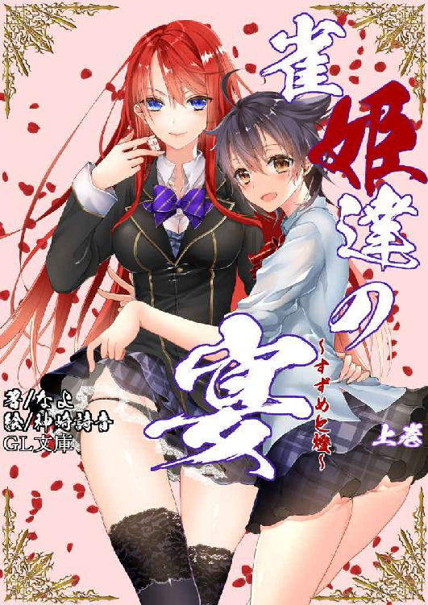
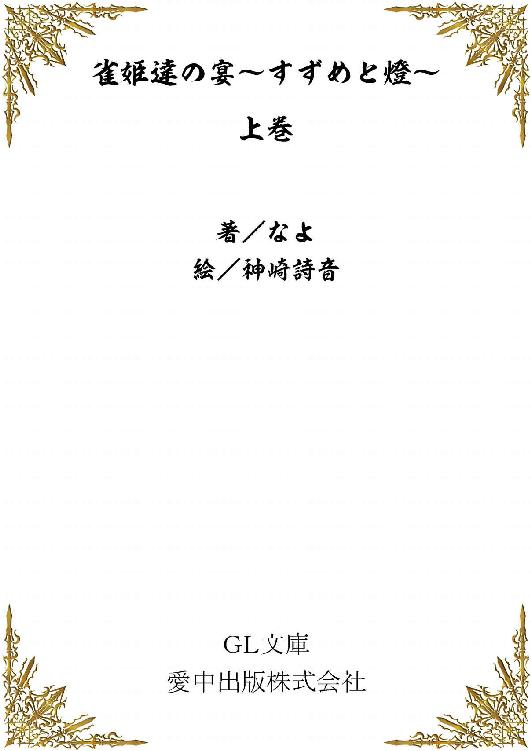

| 雀姫達の宴～すずめと燈～上巻 (GL文庫) | |
| なよ | |
| ainakapubliching (2017) | |


その少女が私のサロンに姿を現したのは、局も終盤に差し掛かった頃だった。
私が少女に気がついたのは一瞬の後――。
――誰かしら。
今日はゲストなど招待していないはず。
眉をひそめてそっと少女に視線を送る。
少女は静かに扉を閉めて、忍び足のようにゆっくりと歩を進めながら、私の後ろに移動する。
気配を押し殺し、足音すら立てないその様は、まるで猫のようだと思った。
放課後の麻雀サロン『ナインズゲート』は、打ち合う生徒たちの熱気で溢れ、私以外に少女に気が付くものはいなかった。
横目で見やれば見た目幼く、制服の上着は着ていないが、付けているリボンの色を見れば、どうやら一年生のようであった。
鼻筋は通り、少し頬が痩せこけてはいるが、美少女といっていい顔立ち。まあ私ほどではないけれど――。
艶のある黒髪は、肩のあたりで不揃いに切られ、活発そうな印象を抱かせる。小さな背格好だが、それが少女の可憐さを演出しているかのようであった。油断なく辺りを見渡す様からは、少し生意気そうな感じを受ける。
腰回りは負けていそうだが、胸とお尻は私の圧倒的勝利だ。
観察していた私の視線と、少女の視線が一瞬交差する。
「何か用かしら？」
言いながら山から牌をツモり、盲牌で不要牌と見極め、即座に一筒を捨てる。
「このサロンのオーナーである燈先輩はどちらにおいでですか？」
「はあっ？ 見てわからない？ 目の前にいるでしょうがっ」
少女のあまりの無礼な言葉に、つい声を荒げてしまった。
この圧倒的な美貌、オーラ、そしてかき集めた点数。
それらを見れば、聞くまでもなく、私がこの麻雀サロン『ナインズゲート』のオーナーであるとわかるはずだ。
そもそも、この学園において、私の名を知らないなどあり得ない。
麻雀学科ランキング一位の私の名を！
しかし、その一年生はそのあり得ないことを口にした。
「ごめんなさい、わかりませんでした――」
その後に続けた言葉は、私を鬼に変えるのに十分なひと言だった。
「――あまり、強そうに見えなかったもので」
私は叩きつけるようにして手牌を倒し、一年生のリボンを掴み取る
そしてそのまま私の横へ乱暴に投げ飛ばした。
「座りなさい一年生。私の強さと礼儀をその体に叩き込んであげるわ」
「よろしいのですか？ まだ途中のようですが」
少女の言葉を鼻で笑う。
「見ればわかるでしょう？ たった今私が和了ったところよ。そして、振り込んだ子は残念ながら飛びよ」
リーチ、平和、混一色、ドラドラ。親っパネで１８０００。合計６３２００点という、圧倒的勝利だった。
「そうですか、では遠慮なく」
そう言って、少女は今しがた私に振り込んだ生徒が座っていた席に腰を下ろす。
ふわり、と黒髪とスカートが舞って、静かに元に戻る。
この圧倒的な強さを見て、眉ひとつ動かさないのはいい度胸だ。
しかし、麻雀は度胸だけで打つものではない。
実力と、そして運さえも味方に付けなければ勝てない世界。
そのどちらも、お前にはない、と突きつけてやらなければ......。
「ところで、ただ打つのでは緊張感が出ませんから、何か賭けてやりませんか？」
笑顔で少女が提案する。
「構わなくってよ。うちのサロンでは賭けごとの禁止はしていないもの」
碁麻棋女学園はその名の通り、囲碁、麻雀、将棋のプロを育成する学園だ。日夜それぞれのプロを目指し、少女たちがしのぎを削っている。
当然授業を受けているだけでプロになるほど甘いものではなく、授業後もこうして実力のある者たちがサロンを立ち上げ、練習と研究に明け暮れているのだ。
私のサロンは麻雀専門のサロンであり、集まる人、そして質は学園内でも最高峰のものと自負している。
それも当然だ。何しろ私がこの学園最強の美少女雀姫なのだから。
そして、強くなるには常にプレッシャーに打ち勝つ精神力が必要だ。だから、このサロンでは金銭のやり取りを許可している。
ある者はお小遣いを、ある者は生活費を、そしてある者は借金をしてまでここで戦おうとする。
「さすがです。では、軽いものから行きましょうか」
少女が人差し指を立てて、小さく微笑む。
「あら、威勢が良かった割に、賭けるとなったら臆病になってしまうのかしら？」
「ええ、わたし、慎重派なものですから」
私の挑発を、少女はなんなくかわす。
「まあ、いいわ。何を賭けるのか言いなさいな」
どちらにせよ、私が勝つことに変わりはないのだ。
「それでは、負けた方が椅子になるというのはいかがでしょう」
「はっ？」
聞き......間違いではないと思うけど、椅子と言ったのかしら？ 負けた方が椅子になると。
「それは、言葉のまま受け取っていいのかしら？」
「もちろんです。負けた方は、四つん這いになって、背中に相手を乗せるんです。そうですね......一時間くらいでどうでしょう。一時間人間椅子になる。その間は決して反抗しない......と」
「......面白いじゃない。お金を賭けるよりもずっと面白いわ」
「ありがとうございます」
「でもいいの？」
「何がですか？」
「あなたの華奢な体じゃすぐに潰れてしまいそうだわ」
仮にも相手は一年生。しかも小柄な少女だ。せっかく心配してあげたというのに――
「うふふ、燈先輩って、そんなに重たいんですか？」
「なっ、そんなわけないでしょうっ」
なんて生意気な少女なのだろう。
「大丈夫ですよ。負けるのは燈先輩ですから」
その時、一瞬だけその子が鋭い視線を放った気がした。ほんの一瞬だけど、背筋が震えた。
＊＊＊＊
「ツモです」
少女が中を卓に叩きつけた。
「リーチ、一発、ツモ、中、ドラ３。うふふ、先ほどの燈先輩と同じ親っパネですね。ついでに燈先輩の点数もなくなってしまいましたね」
少女が得意げに笑みを浮かべる。
「なんっですってぇえええっ！」
私は卓を両手で叩き立ち上がった。
「燈様っ」
同卓についているサロンのメンバーが悲鳴のような声を上げる。
勝負は、終始少女のペースだった。
私が一度も優位に立つことなく南入り直後に飛ばされてしまった。
ありえない。こんなことありえない。私が一度も和了ることなく飛ばされるなんて、今まで一度もなかったのにっ！
「いやー、予想以上に楽勝でした」
少女が両手を組んで伸びをして、いやらしい視線を私に送ってくる。
「こんなの偶然に決まってるわっ」
「偶然だろうが、なんだろうがわたしの勝ちは勝ちですよ」
「くっ」
それは、確かにそうだけど――
「いいわ、今の勝負は私の負けよ。だけど次で今の負け分を倍にして返してあげるわ。次は何を賭けるのかしら？」
「何も賭けませんよ。勝負はもう終わりです」
静かに少女が告げる。
「勝ち逃げするというの？ たまたま勝てたからお仕舞いにしたいのね、でもそうはいかないわ。今の勝負で私が勝っていたら、貴方も同じようなことを言ったでしょう」
「言ったかもしれないし、言わないかもしれない。それはわたしが負けなかった以上、仮定の域を出ないものです。それに――」
少女が視線を上げる。その先にあるのは時計だった。
「もう最終下校の時間じゃないですか。これ以上続けるのは不可能です」
「くっ、貴方もしかして、初めから一回だけで終わるように時間を調整してきたわね」
「ふふ、まあそうです」
完全に計画通りに事を運ばれたということか。
「分かっていただけたのなら、賭けの報酬を払ってもらいましょうか。といっても、ここでやるには時間がありませんし、まさかサロンの主が下級生に飛ばされて、四つん這いになって人間椅子をする姿を晒させるのも可哀想ですから、燈先輩のお部屋でいいですよ」
「くっ、わかったわ」
なんという屈辱。しかし、私が約束を反故にするわけにはいかない。サロンの主として、誇りある態度でいなければ。
「みんな、今日はここまででお開きよ」
「燈さまっ」
「燈先輩っ」
サロンのメンバーが心配そうに声を上げる。
「みんな大丈夫よ。私のことは心配しないで。それから、今の牌譜を頂戴」
「は、はい」
記録係が、今の勝負の牌譜を印刷して渡してくれる。
すると、少女が苦虫を噛み潰したような声をあげた。
「そんなもの記録していたのですか」
「ええ、そうよ。私のサロンではいつもしていることよ。今回は捨て牌のみだけれど、負けた原因を突き止めなければいけないもの」
「そうですか。雑魚は雑魚なりにってことですね」
「なんですってっ？」
「なんでもありませんよ。それよりも早く行きましょう」
急く少女に舌打ちをしたい気分だった。
「わかっているわよ。そうだわ、貴方の名前をまだ聞いていなかったわね」
「そう......でしたか？ わたしの名前なんか聞いても面白くありませんけど」
「いいから名乗りなさい。貴方は偶然にしろ、この私に勝ったのだから、その名前を覚えてあげるわ」
「プライドの高いことで......。まあいでしょう。わたしの名前はすずめ。麻雀を憎む者です......」
＊＊＊＊
「へえ、ここが燈先輩の部屋ですか。さすが、学園一（笑）と言われている人は、住んでいる場所も豪華ですね」
「今、少し馬鹿にした言い方をしなかった？」
「まさか」
すずめがわざとらしく肩をすくめる。
「私の部屋が豪華なのは当然よ。この学園では強いものほど、よりよい暮らしができるようになっている。住む部屋も、食べる物も、強ければ最上級のものを得ることができる」
「ええ、知っています」
すずめもこの学園の生徒なのだから、言うまでもなかったか。
「私に勝った貴方もさぞかしいい部屋なのでしょう？」
「まさか、わたしの部屋は四畳しかない最下層のものですよ」
「はっ？ はぁーっ？ なんでよ。ありえないでしょう。私に勝ったのよ？」
「燈先輩は、よほど自分に自信があるみたいですが、わたしは一年生ですし、それに、まだあまり勝負をしたことがないので」
「一年生だからってのはまだわかるけど、勝負したことがない？ あの態度で？」
「まあ、色々と事情があるんですよ。わたしのことはもういいでしょう。それよりも、早く四つん這いになって下さい」
「くっ、わかっているわよ」
約束は反故にしない。それは私のプライドにも関わることだ。
「好きに座ればいいわ」
リビングの真ん中で、私は両肘と両膝をついた。
「ふふ、これはこれは、素敵な椅子ですね。それでは座り心地を試してみましょうか」
こいつのことだから、全体重を乗せてくるのだろう。そう思い、体に力を込めたが、予想外にすずめはふわり、と羽根でも降ってきたかと錯覚するほど静かに私の背にそのお尻を乗せてきた。
「ふーん、人間を椅子にするのって、こんな感じなんですね。うーん、なるほど、なるほど。でもちょっと不安定ですね」
そう言って、私の背中、脇、肩、どこに手を置こうか迷っているのか、ペタペタと私の体を触り、行きついたのは――
「ここが一番良さそうですね」
「ちょっ、そこは私の――」
すずめが最終的に手を置く場所と決めたのは――
「お、お、お尻を触るんじゃないわよっ」
私のお尻だった。
「反抗しない。そう約束があったはずですが？」
「くっ」
なんという屈辱。下級生に負けた挙句、人間椅子にされ、お尻を触られるなんて――。
「燈先輩のお尻、凄く弾力があって触り心地がいいですね」
言いながら、すずめが無遠慮に私のお尻を撫でてくる。
「そんな感想いらないわよっ」
「ほんと、なんていやらしいお尻なんでしょう。でも、これが今は私の物だと思うと悪くないですね」
すずめが私のスカートを捲り上げ、ショーツ越しにまさぐってくる。
「ちょっと、賭けは人間椅子になるということだけで、お尻を触っていいとはいっていないわよっ。それ以上調子に乗るなら怒るわよっ」
私が怒鳴ると、
「はいはい、反抗しない」
すずめは私のお尻をぴしゃりと叩いてきた。
「っ！」
「大体椅子なんですから、喋ること自体おかしいのですよ。それに、椅子をどう扱おうがわたしの勝手なはずです」
私が怒鳴ったことで、すずめの行為がさらにエスカレートする。
「ほんと、椅子の癖に生意気ですよ」
「あっ、ちょっ......」
すずめが私のショーツの中に手を伸ばす。さすがにそれを許すほど、私は優しくない。
「それ以上手を伸ばすなら、貴方の遊びに付き合うのは終わりにするわよっ」
秘部を触られる直前に、ピタリとすずめの手が止まった。
大事な部分を触られずに済み、ホっと息を吐く。
誰にも触らせたことがないのに、こんなところで下級生なんかに触らせていいほど私の体は安くない。
「遊びじゃありませんよ。真剣勝負で得た正当な報酬です」
すずめが冷たく言い放ちながら、ショーツの上から激しくお尻をまさぐり始める。
「あんっ......」
知らずに声が出た。
直接触ることは止めたようだが、私が反抗したことが相当気に障ったのだろう。
「あっ、そこはダメだって――。ショーツの上からでも触っていいとはいってないっ」
「知りません。わたしは椅子を撫でているだけですから」
「あっ......」
腰ががくがくと震える。
すずめの手は、完全に私のを触っていた。撫でていた。
時折指を強く押し付けたり、叩いたりして、私の体を弄ぶ。
殺す。こいつ絶対殺す。
今にも崩れ落ちそうな体をなんとか支えながら、私はすずめに対する復讐を誓っていた。
「ふふっ、なんだかわたしも少し興奮してきちゃいました」
すずめが右手の人差し指と中指を鼻に付けた後、ぺろりと舐めた。
「少し匂いはしますけど、さすがに味はしませんね」
その意味するところを理解して、かーっと体が熱くなった。
「貴方、絶対殺してやるわ。......いいえっ、殺すだけじゃ飽き足らない。私が徹底的に叩き伏せて、恥辱を与えてからじわじわと嬲ってあげるわっ」
「おお、怖い。でも、こんなにしながら凄まれてもねぇ」
再びすずめがお尻に手を伸ばし、大事な部分をまさぐる。
「ふっ......んん......」
「声を我慢しなくてもいいんですよ？」
「う、うるさいっ。あんっ......」
「ふふっ、予想以上にいい反応です」
満足そうにすずめが邪悪な笑みを浮かべる。
「どうしましょう、このまま最後までしてあげてもいいのですけど、わたしもあまり暇ではないんですよ」
「だ、だったら今すぐどきなさいよ」
「どいてあげてもいいんですけど、一つ条件があります」
「何よ」
すずめがお尻をまさぐる手をひと際強める。
「わたしを燈先輩のサロンに出入りさせて下さい」
「え？ んんっ......、なんですって？ ああっ......んっ......」
ダメっ......もう......。ああっ......！
「もう、聞いているんですか？ わたしを燈先輩のサロンに入れてくださいと言ったのですよ」
すずめが痙攣する私のお尻をパシンっと叩いた。
「わ、私の、サロンに入りたいの？」
荒く息を吐きながらすずめの言葉を繰り返す。
「そう言ってるじゃないですか」
呆れたようにすずめが言う。
「それが貴方の本当の目的なの？」
「まあそうですね。とりあえず......ですが。それでどうなんです？ 入れてくれるんですか？ 入れてくれないんですか？」
「私のサロンに入会するにはそれなりに厳しい審査があるのだけど、特別に入れてあげてもいいわよ」
このままこいつに勝ち逃げさせるわけにはいかない。私のサロンに入るというのなら、すぐにでも叩きのめすチャンスがやってくるというわけだ。私に恥をかかせた償いは絶対にさせてみせるっ。
「何が特別ですか。今の燈先輩は、私にどうか入って下さいと言う立場なのに。ま、いいでしょう」
最後にもう一度私のお尻を撫でて、すずめは私の背中から降りた。
途端に私の体も崩れ落ちる。
床に横たわりながら、呼吸を整えようと短く息を吐き出す。
くっ。こんな屈辱的なところを他のメンバーに見られなくてよかった。
「取引は成立ですね。今日はもう帰りますので、明日からよろしくお願いしますね」
私を見下ろすすずめが小さく手を振って、私の部屋を出て行く。
それを未だ小さく痙攣する体で見送ると、すぐにすずめとの対戦牌譜に手を伸ばした。
あいつの打ち筋は今のところこれだけしか資料がないけど、明日は徹底的に負かしてやる。ほんの少しでも勝機を掴むために、牌譜を研究しなければ。
次は絶対に負けないっ。
「失礼しまーす」
次の日、宣言通り、すずめは私のサロンにやってきた。無邪気な明るい声。かなりご機嫌のようだ。
すずめの姿を見て、場がざわめく。
「燈せんぱーい、すずめちゃんが来てあげましたよ」
場の騒ぎなど気にした様子もなく、私の姿を見つけると、子犬のように近寄ってきた。
「何がすずめちゃんよ。ちょっと貴方こっちに来なさい」
私は素早く、すずめの腕を掴んだ。
「えー、なんですか？ 昨日の続きをして欲しいんですか？ 燈先輩、凄く気持よさそうに」
「い、いいから来なさい」
最後まで言わせずに、すずめの体を引っ張り、私専用の個室へと連れ出す。
「あっ、やっぱり続きをしたいんですね」
何を勘違いしたのか、すずめが頬を赤く染める。
「もう、燈先輩ってば積極的なんですから」
すずめが私のお尻をまさぐってくるが、生憎とそれに付き合う気はない。
容赦なく、すずめの手を払い、机の上に昨日の牌譜を叩き置く。
「これは何っ？」
牌譜を見て、すずめの顔からおちゃらけた表情が消える。
「やっぱり気がついちゃったんですね」
感情のない、大人びた表情ですずめは空いているソファーに腰を下ろす。
そのすずめの前で私は仁王立ちになった。
「どうして、河に中が二枚出ているのに、あなたは中を三枚持っていたの？ いいえ、言わなくてもわかっているわ。他の子が捨てた中を河から拾ってきたのね」
完全なイカサマだ。それを指摘すると、すずめは顔を歪めた。苦しそうにではなく、面白そうに。
「そうですよ。ちょうど拾いやすいところに捨ててあったので使わせてもらいました。でもそれがなんですか？ 気がつかない方がマヌケなんですよ。まさか昨日の負けは無効だと言い出すんですか？」
「違うっ、私の言いたいことはそんなことじゃない。勝負はあなたの勝ちでいい。だけど、イカサマを使うのなら私のサロンに出入りさせることはできないわっ。ここではイカサマは禁止なの。真っ当なプロを目指している子たちを歪めるような技を披露されては困るのよ。貴方がこのサロンに出入りしたいというのなら、今後イカサマは使わないと誓って」
私がまくしたてると、すずめは地面に視線を落とした。
「それは......できません。わたしのプレイスタイルはイカサマを使うことです」
「なぜそんなことをするのっ。イカサマで得た強さなんて、貴方の本当の強さとは言えない。相手が私だったからいいけど、もし容赦のない人間相手にイカサマが見つかったら、その腕を折られても文句を言えないのよっ？」
「わかっていますよ。覚悟の上です」
「なら、なおさら聞きたいわ。どうしてイカサマを使うの？ イカサマばかり使っていたら、いつまでも実力がつかず弱いままよ？」
「別に実力なんてつかなくてもいいんです。だいたいそんなことを聞いてどうするんですか。燈先輩には関係ないことでしょう」
その一言にムカっときた。
すずめを追い詰めるように、すずめの顔を挟んで両手を壁に押し当て、逃げられないようにする。
「貴方のことを心配しているから言っているんでしょう」
すると、すずめは驚いたように私のことを見つめてきた。
「私のことを心配？」
「そうよ。その年でイカサマで勝つことを覚えてどうするの。もっと他に覚えることが沢山あるでしょう」
「燈先輩、なんだかお母さんか先生みたいですね」
茶化す言葉に付き合う気はない。
「いいから答えなさい」
「仕方無いですね」
すずめはそう言って、一呼吸置いた後、冷たい表情で告げた。
「わたしがイカサマを使うのは、何としてでも勝ちたい相手がいるからですよ。それはもう徹底的に叩きのめして地獄を見せてやりたい相手がね」
ぞくり、と背筋が凍った。この子をそこまでかき立てる相手は一体誰なのか。そして、そこまで思わせる何があったというのか。
「そう......貴方がイカサマを使う理由はわかったわ。でも、それなら私のサロンに出入りする必要はないでしょう？」
「ありますよ。大ありです」
すずめが大きく両腕を広げる。
「わたし、燈先輩が欲しいんです」
「はっ」
間の抜けた声を出してしまった私のリボンを、すずめが掴んで引き寄せる。
顔がぶつかりそうな距離で、
「これ以上はまだ教えてあげません」
と言うと、軽く私の唇にすずめの唇を押し当ててきた。
「んなっ」
柔らかっ、じゃないっ。
慌てて引き離す。
「な、な、何するのよっ」
「えへへ、なんだか気持よさそうな唇をしていたものでつい」
悪びれもせず、すずめがソファーから立ちあがる。
「燈先輩が欲しいのは本当ですよ。でも、それはもう少し見極めてからかな。それまではこのサロンで燈先輩と打ちたいんですよ。だから、そうですね......」
すずめが少し考え込む。
「他の人たちと打つときはイカサマは使わない。燈先輩と打つときは、わたしの持っているものをすべて使う。それでどうですか？」
「どうあってもイカサマを使うのね」
「はい。絶対に勝たなくてはいけませんから......」
「はあっ、わかったわ。それで納得してあげる」
まあ、ここが落とし所だろうか。それにしても、あの子がイカサマを使ってでも勝ちたい相手か......。それは誰なのだろう。
「ところで私が欲しいというのは、パートナーになって欲しいという意味なのかしら？」
麻雀は四人で打たなければならない。すずめが誰かとの対戦を望んでいるのなら、誰かがすずめの味方にいないと三対一になってしまう。私がいれば対等の条件で席に付けるということだろうか。
「まあ、そうです。ただし、燈先輩がわたしのパートナーになれるほど強ければ、という条件付きですが」
「はっ。まったく生意気な。この学園で私以上に強い人はいないと言ったでしょう」
「そうとは限りませんよ。燈先輩の知らない強者がいるかもしれませんよ？ ......いいえ、いるんです」
「そう......」
すずめはそいつのことを知っている。そして、そいつを倒したいのだろう。
「それなら早速打つわよ。まずは、私の強さをちゃんと貴方に教えてあげないといけないんだから。言っておくけど、昨日みたいに一局だけで終わりになんてさせないからね。時間の許す限り打ってもらうわ」
「いいですよ。その代わり、毎回何かを賭けましょう」
「ならまずは昨日のお返しよ。今度は貴方に人間椅子になってもらうわ」
＊＊＊＊
このサロンでは自動雀卓もあるが、今回選んだのは手積みの勝負だった。それは昨日と同じ条件でもある。
私とイカサマのことは知らないメンバー二人、そしてすずめで勝負を開始したのだけど――。
「雑っ魚。雑魚いですね、燈先輩」
「ぐぬぬ......」
リベンジの第一局、昨日のように飛ばされるということはなかったけど、結局一万点以上の差を付けられて負けてしまった。
イカサマ相手の麻雀がこれほど厄介だとは......。想像はしていたけれど、予想以上だった。
すずめはイカサマを使うことが自分の麻雀であると言うだけあって、あらゆるイカサマの技術を身に着けているようだ。
ぶっこ抜きや、元禄積み、ドラを積み込む爆弾、そして、最初に見せた河からの拾いなど、遠慮なく使ってくる。
そのどれもが高度な完成度を誇っているようで、よほど注意して見ていないとイカサマをやった瞬間を捉えるのは難しい。
そしてイカサマをやっているとわかっていても、止めることができない。
言葉だけではやったやらないの言い争いいなってしまうから、手を掴むなどして証拠を押さえないといけないのだが、とてもじゃないがそれは出来そうになかった。
第二回戦――
私は戦法を変えることにした。
普段であれば、序盤で聴牌しても即リーチすることはせず、できるだけ高めを狙っていくのだが、とにかく最速で聴牌を目指し、すずめの手を止める意味でも即リーチをかけてみた。
もともと私は配牌の時点でそれなりに揃っていることが多く、数巡もあれば聴牌まで持って行けることが多かった。さらに、引きも強いので、普通の相手であればこちらの速度についてくることはまずできない。
すずめの前に山が残っている時は、さすがにあちらのほうが早いが、そうじゃない場合は私の方が聴牌するのが速くなった。
東二局、親番。ドラは七索。私の配牌は
であった。ここから一巡目に西切り。
二巡目二索ツモ、序盤ということで混一色、一通を目指してもいいが、ここは一索切り。三巡目、五萬ツモ切り。四巡目七索ツモ、打九索でリーチ。
最終的な手牌はこうなり、
東と白のシャボ待ちである。
白は場に一枚出ているが捨てにくい牌だ。東は言うまでもなく出ることが期待できないだろう。そうなると自分でツモるしかないが、特に問題はないだろう。東、白ともに抱えれば確実に手が止まる。このサロンのメンバーであれば私の強さを知っているから無駄に突っ張ってくることもない。問題はすずめだが、彼女の前に山はなく、牌のすり替えは早々出来ない。河も厳しく見張っている。この数であれば河の捨て牌全てを記憶しておくことはたやすいので、入れ替えた瞬間すずめの手を倒して確認してやればよい。
五巡目、六巡目、他家は安牌もしくは萬子の低目を切ってくる。そして七巡目、ふいにすずめから白がこぼれた。
「ロンよ、７７００」
リーチ、白、ドラ１、四〇符三翻。これは和了れたことよりも、すずめから直撃出来たことが大きかった。
「ま、しかたありません。少し欲張ってしまいました」
あそこで白を捨てるあたり、すずめはよほどいい手が入っていたのだろうか。
なんにせよ、早さで勝負すればイカサマを使われようと戦えることがわかった。
一本場も早上がりで５８００をツモり一気に引き離す。
その後は他家が同じように早上がりして、すずめの親に回る。
「さて、ここからが本番ですよ」
すずめが楽しそうに笑みを浮かべる。
サイコロの目は４。すずめの前に丸々と山が残ることになってしまった。
嬉々として牌をツモるすずめの指先に視線を集中させる。そんな私ににっこりと微笑みかけて、悠然とすずめはイカサマを使い始める。自分の手牌のうち何枚かを握り込み、目の前の山の端にある牌とすり替えたのだ。
恐るべき速さだった。私以外は気が付いた様子もない。
ほんの一秒にも満たない時間。あれを止めようとすれば、あらかじめ身を乗り出しておかなければならないだろう。もっとも、私はすずめのイカサマを止めるつもりはない。止められないといってもいいが、それよりもイカサマを使う相手に勝てるかどうかの方が楽しみになっていたのだ。
その局は七巡目で早々にすずめがリーチ、平和、ドラ一、をツモった。
私も五巡目で聴牌していたが、親に振り込むわけにもいかず、すぐに降りたのだ。概ね予想していた和了り牌だったので、読みの勘は間違ってはいなかった。
問題は次の局だった。
サイコロの目は５。
すずめの牌山からのスタートである。
非常に嫌な予感がした。
すずめがドラ表示牌をめくった時、それは確信に変わった。
ドラ表示牌は北。つまり、ドラは東だ。すずめが自分に東が来るように積みこんだのでは？ という疑惑が湧きおこる。もし、東が暗刻でも明刻でもいいから三枚揃えば、即ダブ東ドラ３の満貫が確定する。
自分の手牌は悪くはなかったが、すずめの速度に勝てるかは未知数だ。それでもやらなければならない。絶対にこれを和了りきる。そう強く誓った第一ツモ。よりにもよって東だった。最悪の牌......いや、私は考え方を変えた。これはある意味確認に使える。もし、すずめの手に東が三枚入っているのなら、私がこれを出した瞬間にカンするだろう。そうすればダブ東ドラ４の親っ跳ねが確定するからだ。出すタイミングを間違えないようにしなければ。そっと東を手牌に混ぜた。
しばらくは静かに進んでいるように見えた。私の手も徐々に完成し始めている。問題はすずめだ。ここ三巡程ツモ切りが続いている。聴牌の気配濃厚だ。
次のツモで私も聴牌した。不要牌は東。......さて、すずめはどう出るのか。
私が今のすずめの手牌であれば鳴かない。もちろんすずめの手牌を覗いたわけではないが、鳴かない方が良い理由がある。私の予想が間違っていなければ、これですずめの待ちが絞れるはずだ。
私は静かに東を出した。
「カンです」
すずめが勢いよく、東を攫って行く。そして、槓ドラはまたしても東だった。これでダブ東ドラ８が確定した。そして、すずめがドラの積み込みをしていたこともほぼ確定した。まあこれは薄々分かっていたことなので、ただの確認だ。
「まさかドラを捨ててくれたばかりではなく、槓ドラまで乗るとは思いませんでした」
わざとらしくすずめははしゃいだ声を上げた。
「いいのよ、それはすずめに鳴かせるために持っていたのだから」
「ふふ、負け惜しみですか？ 親倍は痛いですからね、気をつけた方がいいですよ」
「大丈夫よ。貴方に振り込むことはまずないから」
「へー、それはそれは」
この子は......すずめは気が付いていないのだろうか。自分がとんでもないヘマをしたことに。
すずめがカンをして東を倒した時、その右に一牌しか残っていなかったことを。
すずめの癖......習慣といってもいい。これまでの対戦ですずめは綺麗に理牌することが概ね分かっていた。とすれば、待ちは字牌単騎ということになる。もちろんこれから入れ替わる可能性はあるが、少なくとも右端の牌が動かないうちは字牌以外は安牌だ。
これには他家も当然気が付いている。
これまで危険牌と思われていたものを次々に捨てて行く。
それを見て、すずめの顔が曇った。すずめは自分のしでかしたミスにまったく気が付いていないようだ。
そうこうしているうちに、すずめから私の当たり牌が零れてきた。
「ロン、２０００よ」
平和、断幺のみだが、点数は関係ない。すずめの積み込みまでして和了ろうとした親倍を防いだのだ。
「くっ」
悔しそうにすずめは手牌をぐちゃりと倒した。
これで調子を崩したのか、その後のすずめはなかなか和了ることができずに、ついに私がトップで勝利した。
「ふふ、すずめの人間椅子楽しみだわ」
やり返せる喜びで、自然と頬が緩む。
「あー、はいはいっ。好きにしてください」
すずめは不機嫌さを隠そうともしない。めんどくさそうに両手を頭の後ろで組み、投げやりな口調で返してくる。
「それで、どうする？ もう一度やる？」
「もちろんです。燈先輩が強いことは私にとっては良いことですが、負けたままでは終われません」
私の問いかけに、すずめは牙を剥いて応えた。
「ふふ、いいわ。それじゃあ次は何を賭けようかしら」
とりあえず人間椅子をやり返すという目標が達成できたので、次はなんでもよいのだけど......。
「燈先輩の部屋、凄く住み心地が良さそうでしたから、わたしが勝ったらしばらく住まわせてもらいましょうか」
私の部屋に住みたいねぇ......。
「それなら私が勝ったらすずめには裸踊りでもしてもらおうかしら」
「くっ、いいですよ。やってあげましょう。燈先輩が勝ったらですけどねっ！」
顔を真っ赤にしながら、すずめが席に着く。
さて、どうしようか......。
私はすずめの弱点を発見してしまった。それと同時にすずめの本当の雀力もなんとなくわかってきた。
すずめは......イカサマの腕こそ一流だが、麻雀そのものはあまりうまくない。ごくごく平凡な打ち手であるとわかってしまった。そんな彼女が倒したい相手がいるという。その話には少し興味がある。
となれば......。
「これで終局ですね。わたしの圧倒的勝利です」
すずめが高らかに宣言をする。
「まあ、仕方無いわね。よほど裸踊りが嫌だったのかしら」
余裕を持って、私は返事をした。
「違います。実力の差です」
誇るすずめには悪いが、今回私は少しばかり手を抜いた。
いや、手を抜いたというよりは確認に徹したと言っていい。
私の予想した待ちに間違いないか。すずめの得意な打ち筋、牌の並べ方、癖、それらをこの半荘で確かめたのだ。
「そういうことにしておいてあげるわ。もう一度リベンジと行きたいところだけど、もう時間ね」
最終下校時刻が間近に迫っていた。今日の目的は達成できたのだし、無理に続ける必要もない。
「私の部屋に住みたいというのだったわね。なら一緒に帰るわよ。部屋で私の勝ち分は清算してもらうから、忘れないでね」
「わかっていますよ」
軽い雑談をしながら後片付けをして、サロンに施錠をする。
「それじゃ、行くわよ」
「はーい」
ウキウキとした様子ですずめが後に付いてくる。
私は面倒なことに首を突っ込もうとしているのだろうか。でも、イカサマを使う彼女を放っておくことはできない。私はイカサマで強くなる麻雀など認めないのだから。
＊＊＊＊
「私の部屋に住みたいっていうのはいいけど、着替えとかはどうするの？ 下着は持ってきたの？」
部屋に戻った私は荷物を置いてすずめに問いかける。
「燈先輩のを貸して下さい」
ニコニコと、とんでもないことをすずめは言う。
「ノーよ。だいたいブラのサイズが合わないでしょ」
「じゃあ、下だけでいいです」
「......」
「下だけでいいです。あとはＴシャツでも貸してもらえれば。部屋の中では不自由しません」
「......わかったわよ。好きにしなさい」
この子の考えていることがわからない。待ちはわかるというのに、こういう思考だけは予測がつかない。あとですずめ用の下着と部屋着は買ってこようと心に誓った。
「さて、戻って来て早々悪いけど、賭けの報酬を払ってもらおうかしら」
屈辱の人間椅子。これだけは何を置いてもやっておかなければ、私の気が収まらない。
「わかりました」
素直に頷いて、昨日私が四つん這いになった位置で、すずめも四つん這いになる。
「さあ、どうぞ。燈先輩の張りのあるお尻を乗せて下さい。遠慮なんてしなくていいですから」
「遠慮なんてするつもりはないわよ」
といいつつも、すずめはあまり体重を掛けないように座ってくれたので、私だけ乱暴な座り方をするわけにはいかない。
そっと上品に、すずめの背中に腰を下ろす。途端に――
「ぐっ......、お......、おもっ死ぬっ......」
すずめが、お腹の底から絞り出したような苦しげな声を上げた。
「失礼ねっ！ そんな重いはずないでしょうっ」
下から聞こえるうめき声に、思わず腰を浮かせる。
「じょ、冗談ですよ。さあ続きをどうぞ」
......なんだか、本気で苦しそうだ。すずめは同年代の中でも華奢な方だろう。筋肉もあまり付いていないように見える。
「ほんとに大丈夫なんでしょうね。骨でも折られたらこっちが困るんだけど」
「だいっ......大丈夫ですよ」
仕方なく再び腰を下したのだけど、座り心地は正直あまりよくなかった。もういつ潰れるのか心配で心配で、座り心地を味わう気分でもない。
「かなり苦しそうじゃない？ 私の質問に答えてくれるなら、止めてあげてもいいけど？」
「......」
ぷるぷると、すずめが震えていた。
あ、ダメだわ。と、私は悟った。これもう限界ね。私の話を聞くどころの騒ぎじゃなさそうだ。
私は諦めて立ち上がった。
「？」
すずめが不思議そうな顔で見上げてくる。
「もういいわ。たいして楽しいものでもなかったし。それよりも私の質問に答えなさい。それで許してあげる」
「随分と優しいんですね」
「ええ、私は優しいのよ」
腕をマッサージしながら、すずめが立ち上がる。私はすずめの正面に立って、視線を合わせて問いかけた。
「貴方の倒したい相手というのは誰？ どうしてその人と戦いたいの？ それを答えなさい」
「......」
すずめがしばらく沈黙する。
「それを答えるのは、燈先輩がわたしのパートナーになってくれると約束してくれてからです」
「話を聞いてからじゃないとイエスともノーとも言えないわ」
「それではダメです。名前を出すからにはパートナーになってくれると言ってくれないと。そうじゃないと、やっぱり無理と言われて、その後でそいつにわたしの情報を売られてしまうかもしれない」
「そんなことしないわよ。私を信用しなさい」
「信用は......しています。でも、わたしはこの復讐に全てを賭けています。約束をしていただかなければ話せません」
復讐と来たか。これはかなりヤバイ話なのかもしれない。
「それじゃあ、一つ。私から情報をあげるわ。きっとすずめの役に立つ情報よ」
「なんですか？」
「私、今日の半荘三回で、貴方の癖を大体見抜いたわ。それを教えてあげる。もし私が貴方の敵に情報を売るような人間だったら、そんな重要な情報を教えたりはしないでしょう？」
「......それは、そうかもしれませんが」
すずめがいぶかしむような表情で頷く。
「じゃあ、まず一つ。貴方は理牌が綺麗すぎる。萬子、筒子、索子、字牌と毎回ご丁寧に並べ直しているわね。ツモって引き入れた牌、捨てた牌、それらを観察していれば、どこに何があるのかなんとなくわかってしまうわ」
「そんなこと出来るんですか？」
「出来るわよ。あれだけ毎回同じ並べ方をしていればね。そして、それに関連して、上下を直す癖もあるわね。あなたＡ型でしょう。几帳面すぎるわ」
「......」
すずめは押し黙った。自分で気が付いていなかったのだろう。
「あと、さっき東をカンした局があったでしょう」
「ええ......」
眉をひそめてすずめは私を見る。
「あの時、東の右側に一つしか牌がなかったわよ」
「！」
すずめも気が付いたようだ。
「字牌の単騎待ちだと気が付いていたということですか」
「そうよ。あの場面は私ならカンはしなかった。ドラの積み込みをしていた貴方は『よし出てきた』と思ったでしょうけど、あそこで鳴くのなら予め単騎待ち用の牌を中に移動させておくべきだったわ」
「......」
「そして、もう一つ。待ちの形が素直すぎる。二回戦目、三回戦目と、私以外から出和了り出来なかったのに気が付いてる？」
「......気が付いていませんでした」
「私は確認の為にあえて振り込んだりしていたけど、他家の子たちも、貴方の待ちが大体予測できてしまっていたということよ」
「......」
「それで、何が言いたいかというと」
これが本題だ。
「貴方、麻雀歴がとても浅いわね」
ピクリ、とすずめの肩が小さく跳ねた。
「そんなこともわかってしまうんですか？」
「ええ」
「参りましたね」
すずめは両手で顔を押さえて床に視線を落とした。
「イカサマの腕は一流だったから、初めは対抗できなかったけど、観察しているうちにすぐにイカサマの腕と麻雀の腕がちぐはぐだと気がついたわ」
「......確かにわたしは麻雀を始めて一年も経っていません。基本的なルールを覚えてからは、ひたすらイカサマの練習をしていました」
「やっぱりね」
とりあえず、すずめに関しての確認はできた。
「それで、たった半荘二、三回でメッキが剥がれてしまうその腕で、誰に復讐をしたいというの？」
「......わかりました。話します。話しますからわたしのパートナーになると言って下さい。今の話を聞いて確信しました。やはり燈先輩の力がわたしには必要だと」
「名前が先よ。それと、復讐したいという理由も話しなさい」
すずめの肩を掴んで私の方に顔を向けさせる。
すずめは今にも泣きそうな顔をしていた。
イカサマの腕に自信があり、実際に私を初見では圧倒的な強さで負かすことができた。しかし、すぐに自分の弱点を見破られてしまったのだ。そんな腕で本当に復讐できるのか不安になっているのだろう。
「一度座って落ち着きなさい」
「先輩の背中にですか？」
「......ベッドによっ」
冗談を言えるのならまだ大丈夫だろう。
すずめの体を軽くベッドの方に押して座らせる。私もすずめの隣に座った。
少しの間押し黙っていたすずめだったが、ややあってようやくその重い口を開いた。
「わたしが、復讐したい相手は......この学園の生徒会長、白音です」
「へえ、シロにねぇ」
生徒会長......私はシロと呼んでいるが、知らない仲ではない。
サロンの運営で生徒会とのやり取りも多いので、おのずとシロと話す機会も多かった。何度か打ったこともあったが、私ほどではないが地力はかなり高かった気がする。
「あいつのせいで、わたしの母は多額の借金を背負わされ、借金返済のために無理をして働き、体を壊してしまった」
よほどシロが憎いのだろう。すずめは拳を握り締めて、体を震わせていた。
「シロがそんなことをしていたの？ 当然学園外でのことよねぇ。へえ、意外な裏の顔があったものね」
私は、シロの話に興味は持ったが、すずめの母親に関しては何の感情も抱かなかった。どんな理由があるにせよ、賭け事で借金を負ったのなら、それはその人間の責任だ。どんなことをしてでも返すのが道理だ。
「あいつを母と同じ目に合わせたいんです。多額の借金を背負わせて、ボロボロにしてやりたい」
うーん......。
すずめの憤りとは裏腹に、私の思考は冷静極まりない。
協力してあげるのは、まあ容易いことだ。私はあくまでも対等の場で戦えるようにする為の駒であるわけだし、結局はすずめとシロの一騎打ちなのだから私にデメリットはあまりない。
シロが裏で怪しげなことをする人間なら、一度本性を現したシロと戦っておくのもいい経験になるだろう。
「事情はわかったけど、私にあまりメリットがないわね」
「メリットならありますよ」
すずめが私を見つめて顔を輝かせた。話しに食いついてくれたと思ったのだろう。
「私たちが勝ったのなら、利益はすべて燈先輩にあげます」
「利益ねぇ......。それって、借金を帳消しにした余りのお金ってことよね。そもそも借金っていくらくらいなのかしら？」
「三千万円です」
「......それはまあ大金だこと」
うっそりと溜息をついた。
麻雀に負けて三千万の借金を背負うなど尋常ではない。すずめの母親は、よほどのギャンブル狂いなのだろうか。
「当然それだけのお金を賭けるのですから、大勝すれば余剰金もかなりのものになるはずです」
「それはそうかもしれないけど、どうやってシロにその条件を呑ませるのよ」
「わたしが正体を明かして勝負を挑めば、必ず乗ってくるはずです」
自信満々にすずめは言い放つ。
「そうかしら。勝負なんてしないと言われたらどうするの？」
「あいつの性格からして、絶対に借金の上乗せをしようとしてくるはずです。あいつは金の亡者です。そして、相手の不幸な姿を見て喜ぶ鬼畜です」
随分な言われようだこと。
「まあ、それならいいのだけど、一つ確認するわよ」
「なんですか？」
「シロはイカサマを使うのね？」
普通の打ち方で、それだけの大金を動かす勝負をするとは考えにくい。確実に勝てると踏んでいるからこそ、大金を賭けたのだろう。
「ええ、そうです。その為に......あいつに対抗するために、わたしもイカサマを身につけたんです」
「そう......」
イカサマを使う相手からの勝利。その称号は将来私がプロになった時に持っていて損はないだろう。さらには大金を賭けた勝負に臨み、後輩を救うというのも良いエピソードになりそうだ。
「どうなんですか？ わたしのパートナーになってくれるんですか？ くれないんですか？ もしかしてもっと別の報酬がないとダメですか？」
私が沈黙していると、すずめが勝手に色々と憶測して慌て始める。すずめにしてみたら、今が勝負時なのだ。私をパートナーに出来るか否かでシロとの勝負も決すると言ってもいい。何しろこの学園で私以上の打ち手はいないのだから。
「わかりました。もしあいつに勝てたらわたしをあげます。わたしが何でもいうことを聞いてあげます。だからわたしのパートナーになってください」
すずめが私の胸にすがってくる。あの生意気だったすずめが私を頼ってくる様は快感すら覚える。
「わかったわ。パートナーになってあげる」
「本当ですかっ？」
「ええ。ただし、一つ条件があるわ」
抱きついてくるすずめの体を押し返して、向き合わせになる。
「私も勝負に入れなさい」
「どういうことですか？」
キョトンとしてすずめが私を見つめる。
「貴方とシロだけの勝負にはしないということよ。協力はするけど、私もトップを狙う。まあ、私が勝ったら貴方の借金分は帳消しにしてあげるから安心しなさい」
「コンビ打ちはしてくれないということですか？」
「それは状況によるわ。二対二の戦いであれば、意志の疎通をして打つというのは当然ありよ。お互いの牌状況を確認して、鳴かせたり、わざと振り込んだりはするわ。私たち二人の勝利を最優先するけれど、出来る限り私は自分の点数を伸ばすことに専念する。それだけよ」
「牌をテーブルの下で受け渡したりは......」
「もちろんそんなことしないわよ。貴方はイカサマを使っていいけれど、私は正々堂々と戦うわ。一つ言っておくけれど、私イカサマは嫌いなの。それだけはその胸に刻んでおきなさい」
言いながらすずめの胸に人差し指を押し当てた。これはすずめの戦いでもあり、私の戦いでもあるのだ。
「わかりました。自分の信念を曲げないその姿、素敵だと思います」
私の人差し指を握り締めて、すずめが頬を染めた。
「いいこと、明日から特訓よ。最低限、うちのサロンの中でも上位の雀力を身につけてもらわないと勝負にならないでしょうからね。貴方の......すずめの癖を全部潰すわよ」
一応、昼間の賭けですずめがしばらくは私の部屋で生活することになったので、一緒にいる間は手とり足とり教え込むことが可能だ。
まあ、今日はもう遅いので、二人で食事をして、もうベッドの中なのだけど。
「はい、燈先輩にお任せします」
すずめは驚くほど素直になった。パートナーになると言ったのがよほど大きかったのだろう。私の雀力をすずめが理解したというのもあるかもしれない。イカサマを使われなければ、すずめに負ける要素はないのだ。
「絶対にあいつに地獄を見せてやります」
動機はいささか褒められるものではないけど、これくらい強い意志があったほうが麻雀の上達も早いだろう。できればイカサマなんて使わない普通の雀姫になって欲しいところではあるが......。
すずめの顔をじっと見つめていると、とても大事なことを忘れていたことを思い出した。私も復讐しないといけないのだった。
もぞもぞと、布団の中で体を動かして、手をそっとすずめの方に伸ばす。
「燈先輩どうしたんですか？ わたしの顔をじっと見つめたりなんかして。もしかして私に、あんっ......」
ふいにすずめが艶めかしい声を上げた。もちろん私の仕業だ。
「うふふっ」
「せ、せんぱい。どこ触ってるんですかっ」
すずめが顔を真っ赤にして口を尖らせる。
「何よ。文句でもある？」
「文句っていうか、あっ......んんっ......。も、もうっ」
すずめが体をよじらせて逃れようとするが、そんなものおかまいなしだ。
私はすずめのお尻をまさぐっていた。さっき背中に座っていた時は忘れてしまっていたが、昨日やられた仕返しというわけだ。
「あ、燈先輩ってば......興味......あ、あるんですか？」
次第にすずめの瞳が潤み始める。
「興味ってなんのよ。私は昨日あなたにやられたことの仕返しをしているだけよ。お尻を触っていいなんて約束なんてしていなかったのに、よくもまあ好き勝手してくれたわね。今日は私が賭けに勝ったのだから、同じことをするのは当然の権利でしょう」
「もうっ、そんな照れ隠ししなくてもいいですよ。わたし、燈先輩にだったらあげてもいいですよ？」
あげるって、何をだ。私はただ復讐しているだけだ。
昨日私がされたように、さらに奥深くまで指を伸ばし、すずめのお尻を優しく撫であげる。
「あっあっ......、そ、それダメです。そ、そこ触られたら。あっ......あんっ......」
すずめが体を震わせながら、私に抱きついてくる。
「も、もうぅ。燈先輩がその気なら、わたしもその気になりますからね」
すずめが抱きつきながら、足もとをもそもそと動かし始めた。
何をしているのかしら。
眉をひそめてすずめの行動を見守っていると、ぽいっと、何かを布団から投げ出すような音がした。さらに続いてすずめが私から体を離すと、あろうことか上着を脱ぎ始めたのだ。そして同じようにベッドの上から放り投げる。
「ちょっと、何やってるのよ」
思わず枕もとの灯りを付けると、すずめは素っ裸になっていた。
「燈先輩も早く脱いで下さい」
いいながら、すずめは私のパンツを脱がしにかかってくる。
「なんで私が脱がないといけないのよ」
必死に抵抗すると、
「だって、エッチなことするんでしょう？」
と、とんでもないこと言い始めたのだ。
「しなわいよっ」
「いいんですよ、恥ずかしがらなくても。あんなにも情熱的にわたしのお尻を撫でてきたじゃないですか。もう受け入れる準備オッケーになっちゃいました」
すずめがパンツを脱がすのは諦めて上着を脱がしにかかろうとする、それを防ごうとすずめの腕を掴もうとした瞬間――
すずめは目にも止まらぬ速さで私のパンツを脱がせたのだった。まさにイカサマを使うときの如き素早さだった。
慌てて股間を抑えると、今度は上着を背中からまくりあげられて、綺麗に脱がされてしまった。
「わたしたちパートナーになったんですものね、お互いのことをよく知るためにこういうことをしちゃうんですよね。わかります。さすが燈先輩です」
すずめが私の上に覆いかぶさる。
「違うっ、違うからっ。私は単純に昨日の仕返しをしただけで、エッチな意味なんてないんだからーーーーーーーーっ！」
＊＊＊＊
朝の目覚めはあまり良くなかった。
むしろ頭痛がすると言っていい。
私はベッドからそっと降りると、シーツを自分の体に巻きつけて辺りを見回した。
パンツ......パンツは何処へいったのよっ。
すずめが適当に放り投げたせいで、パンツが行方不明になっていた。
その行方不明にした張本人は未だスヤスヤと眠っている。裸で......。
「ちょっと、貴方も起きて探しなさいよ」
足ですずめの頬をつつく。
昨日は本当に危なかった。
あと少しで、女相手に乙女を散らせてしまうところだった。
かろうじて。本当にかろうじてすずめの説得に成功し――まずはプラトニックな関係からがいいという私の提案を、なんとか受け入れてもらえたのだ。
本当にあと一歩遅かったら、すずめの指が私の......。いや、言うまい。昨日の夜のことはなかったのだ。うん、そんなことはなかった。
「ううん......」
何度も突いたところで、すずめがようやく目を覚ます。
「うあ......燈先輩。おはようございます」
「おはようじゃないわよっ。さっさとパンツを探して穿きなさい。まったくどこへ投げたのよ」
「えへへ、昨日は楽しんじゃいましたね」
「楽しんでないっ」
下卑た笑みを浮かべるすずめを軽く蹴飛ばす。
「ああん。そういうプレイはまだ早いです......ってパンツありましたよ」
ベッドから半分落ちた状態のすずめが、私のパンツを手に立ち上がった。まったく......汚れてなければいいのだけど。
「それじゃあ穿きますね」
「それは私のっ！」
「燈先輩、朝からテンション高いですね」
「誰のせいよっ」
本当に穿こうとするすずめの手からパンツを奪い返し、ようやくひと心地つくことが出来た。
これで自由に動き回れるようになったので、さっさと自分のブラやら服やらを回収して身支度を整えはじめる。
その間すずめはベッドに再び戻り、体を丸め、二度寝態勢に入っていた。
「すずめ、寝るのは勝手だけど、授業にはちゃんと出なさいよ。あと、放課後はサロンに来るように」
「わかっていますけど、燈先輩の匂いが染みついているベッドがわたしを離してくれないんですぅ。
「はあっ......」
盛大に溜息をついた。もう何も言うまい。麻雀のこと以外は私の知ったことではないのだ。
完全に寝息を立て出したすずめを放って、私は一人で朝食を食べて登校したのだった。
＊＊＊＊
放課後のサロンは今日も熱気に満ちている。
ここにいる者は全員麻雀が強くなりたいと願ってる者たちばかり。その熱気に中てられると、私も気持が昂ぶってくる。
「おっそいわね」
せっかくやる気に満ちているというのに、すずめが一向にやってこない。本気で復讐したいと思っているのなら、一分一秒も無駄にできないというのに。
「燈様、昨日の一年生をサロンに出入りさせるって本当ですか？」
すずめがやってくるのを仁王立ちして待っていると、隣から後輩の子がおずおずと聞いてきた。
「ええ、ちょっと訳ありでね。少しの間だけ我慢して頂戴」
「燈様がそうおっしゃるのなら我慢しますが、昨日のような無礼な態度を取ったら引っ叩いてもよろしいでしょうか」
「まあ、ほどほどにね」
あの子のことだ、一度ひっぱたかれた方がいいのかもしれないと、少し思ってしまう。すずめは麻雀も性格も、かなり異常なのだ。
すずめは本当に麻雀の基本だけを知っているという状態で、その強さは完全にイカサマによって支えられているものだった。だから、すずめの打ち筋に慣れてくると、癖や待ち方などがすぐにわかってしまう。それらを全部直して初めてシロと対等に戦うことができるようになるだろう。
「こんにちはー」
すずめがやってきたのは、放課後三十分ほどしてからのことだった。
「遅いっ。何をやっていたのよ」
眼前に迫って問い詰めると、すずめはエヘラとだらしのない笑みを浮かべた。
「お昼まであのまま眠ってしまって、午後から授業に出たんですけど、かなり叱られちゃいました」
まあ、そうなるんじゃないかと思っていたことが、そのまま当たったというわけだ。
「だって、燈先輩のお布団、すごくいい匂いがするんですもん。気持ちよくてぐっすりです」
「そういうお茶らけはもういいから、座りなさい。徹底的に叩き直してあげるから」
すずめの首根っこを掴んで、卓へと放り投げる。
「いい？ あんたのパートナーになってやるとは言ったけど、まともな実力がつかなかったら話は無しにするからね。それだけは覚えておきなさい」
「わかってます。勝負にだけは負けませんから」
ようやく真面目になったのか。すずめは低い声で呟いた。暗い炎をその眼に宿す。
どうもこの子は精神的に不安定なところがあるように思える。酷く冷酷な表情を見せたかと思えば、人懐っこく甘えるような顔をするときもある。物怖じしないしないところはイカサマを使う上でもプラスになるだろうけど、技術だけではなく、精神的にも成長させてあげたいところだ。
「とりあえず始めるけど、まずすずめはいつも通り打って頂戴」
「いつも通りってことは、いつも通りってことなんですよね？」
「ええ、そうよ」
言葉では言わないが、イカサマを使って構わない、ということだ。
「その代わり、聴牌になったらそれを教えてほしいの」
「どういうことですか？」
「貴方の欠点をまずは教えて、自分のやり方はダメなんだって理解してもらうためよ。貴方は和了り形が出来たと思ったら、そこで聴牌になったと告げる。そうしたら私が貴方の待ちを言い当てるわ」
「......へえ、面白いですね。確かに昨日わたしの待ち方が素直すぎるって言ってましたけど......」
「ええ、それを実際に証明してあげるわ」
「わかりました」
面白そうだとすずめが頷いた。
東一局。親は私。
席はすずめの右隣に私が座った。これには一応理由がある。狙い通りのことができるかはわからないけど――
序盤、私もいつも通りに打つことにした。出来る限り点数を高めに持って行けるように手作りをする。ある意味、すずめ......ひいてはイカサマを使う相手に対して、聴牌までのスピードで勝てるかどうかを試すためだ。
真っ向勝負でどんな相手にも勝つ。それが私の目指す麻雀だ。
しかし、自動雀卓ならともかく、あらゆるイカサマがし放題の手積みではやはり分が悪いようだ。
「燈先輩。とりあえず聴牌したのでリーチを掛けたいのですが」
すずめが六巡目ではやくも聴牌宣言をした。私はまだ一向聴。悪くはないが、おそらく聴牌までにまだ数回積もらなければならなかっただろう。
「いいわ。リーチ棒を置いたら少し待って頂戴」
「はい」
私も手を止めて、ざっとすずめの捨て牌を確認した。すずめの捨牌は
このわずか六牌の捨牌から待ちを推測する。なかなか難しいことだが、すずめの癖を考慮すると、それが見えてくる。
「一、四萬、東が本命で、三萬六萬あたりも危ないわね。まあ、安牌でない萬子を捨てることはないかしら」
そう告げると、すずめの表情がぴくりと動いた。
「それ、当たっていたらどうするんですか？」
「当たりだったらそこで終わりよ。今は勝ち負けではなくて、雀力を付けるためにやっているのだからね」
「そうですか......」
憮然とした表情ですずめが手牌を倒す。
すずめの手牌は
であった。
「どうして、わかったんですか？」
少し、瞳を潤ませながら、すがるような声ですずめが私を見る。
「今のは基本的な予想と、すずめの癖を合わせて導き出しただけよ。ちゃんと解説してあげるから、そんな目で見ないで。そして、学んで頂戴」
安心させるように言ってから、答え合わせを始める。
「まず、すずめの捨牌の西と南、そして九筒から何がわかるかというと、手牌に東が二枚あるということ」
「はあっ？ な、なんでそれがわかるんですか」
「貴方は理牌を綺麗にしすぎると言ったでしょう？ 萬子、索子、筒子、風牌、三元牌、と並べるものだから、西、南を捨てた後、手牌の右端には何も入れていなかったことから北以降の牌は持っていないとわかった。そして、九筒を捨てた時は右から三つ目の牌だったわ。つまりは右二牌は同じ九筒、もしくは東しかないということになる。でも、場に九筒が二枚捨てられていることから、二牌は東という可能性が非常に高くなる。そして、六筒も手出しだった。これにより、右端五牌が筒子の七から九のどれかを三枚使った一面子と東二枚で確定。五索も手出しで、その右に三枚あったから、一面子出来ているのがわかった。五索を出したところにツモった牌を引き入れたから、六索か七索じゃないかと思っていたわ。この辺りで三色狙いの匂いがしていたわね。そして、最後に左から三つ目に何かの牌を引き入れ、二萬でリーチ。リーチをかけた時点でわかっていない牌は五つ。萬子系と、四索以下の牌で出来る面子のみ。でも、私からはその五つが萬子であることがわかっていた」
「な、なんでですか？」
すずめは恐ろしいものでも見るようにして呟いた。
「私の手には一索が三枚あるの。そして場に一索が一枚捨てられている」
「そ、それがどうしたんですか？」
普通なら、それだけでは萬子と断定することはできない。しかし、すずめの癖を知っていれば、萬子と断定できるのだ。
「いい？ すずめは左から四つ目と五つ目の牌の上下を直したの。もし、それが二索から四索だとしたら、上下の絵柄は同じだから直す必要はないわ。一索なら直すこともあるでしょうけど、すでに一索は全部使われていて、すずめの手牌にある可能性はゼロ。その上で上下を直す牌というのは萬子しか残されていない」
ごくりと、すずめが喉を鳴らした。
「で、最後に二萬を切ってリーチした。最後までその牌を残していたということは、二、二、三萬もしくは、二、三、三萬となっていて、最後に邪魔になったからということね。二、四、五萬や、二、五、六萬とかだったら、もっと速い段階で切っていたはず。だから、さっきの予想になって、もし、対子で残していたのなら、萬子と東が危ないということになるの。わかった？」
「い、いえ。あまり......」
私が理論を説明しても、すずめは目を点にするばかりだった。
まあ、仕方無い。実戦経験が乏しければ、この辺りのことはまだわからなくて当然だ。イカサマでしか戦ったことがなければなおさらだ。牌をすり替え、常に早上がり。おそらく出和了りよりもツモ和了りの方が多かったことだろう。
「まあいいわ。長々と説明したけれど、今回はリーチを掛けた牌の裏スジは危険度が高い、というのが常識だということを頭の中に入れておきなさい」
「......確かに、今までリーチを掛けた傍の牌で待っていたことが多かったかもしれません」
自分の今までの待ちを思い出したのか、少し顔が青くなっていた。
「囲碁や将棋に定石と呼ばれているものがあるように、麻雀でも当然存在するわ。それらを最低限覚えたほうがいいかもしれないわね。では、次へ行きましょう。この半荘は打ち方を変えないでね」
「はい......」
その後も、すずめは聴牌まで持って行くスピードは格段に速かったものの、私はその和了り牌を７割から８割の確率で言い当てた。
「燈先輩は、いつも相手の和了り牌が見えているんですか？」
すずめはかなり憔悴していた。ことごとく和了り牌を言い当てられればそうなるのも仕方無い。
「さすがにそれは無理よ。今はすずめの手牌と捨牌に神経を注いでいるから言い当てられるだけで、このサロンの上位者あたりとの対戦だったら３割もいかないんじゃないかしら。ただ、危険な匂いのする牌はなんとなくわかるから、言い当てられないにしても、危険だと感じる牌は場に出さず、振り込みを避けることはできるわね」
「そうですか......」
「これで、すずめの理牌に問題があることがわかってもらえたと思うけど」
「はい......」
すずめは素直に頷いた。
よしよし、だいぶ飼い慣らせてきた感じだ。
「じゃあ、次からは理牌するのはやめなさい」
「まったくしないでやるんですか？」
「ええ、そうよ」
理牌せずに打つというのは、すずめにとって未知の領域だろう。新たな半荘を始めると、すぐにある傾向が見てとれた。それは私の狙い通りのことだ。
理牌せずに打つと、相手に自分の手牌を探られる心配はなくなるが、同時に手牌の管理が複雑になる。慣れればなんということはないのだが、初めて理牌せずにやるすずめにとっては、自分の手牌が気になって気になって仕方無いに違いない。思った通り、先ほどからせわしなく手牌に視線を落とす様が見てとれた。
さて、ここからが本番だ。
慣れないやり方をさせられても、なおすずめはイカサマをしようとしてくる。手牌の端二枚を手の中に隠したのを見て、私は決行する。
普段なら、すずめの素早いすり替えに、わかっていても止めらられなかったが――
今だっ。
私はタイミングを見計らって、左手を卓の上に差し出した。
瞬間――
牌山とすり替えようとしていたすずめの手と、私の手がぶつかる。
「あっ」
すずめが声を上げ、手の中から牌が零れ落ちそうになる。それを慌てて隠して手牌に引き戻した。
「あら、ごめんなさい。卓にゴミが落ちていたから拾いたくて」
「い、いえ......」
すずめはびくびくとしながら、せわしなく手牌に触れては理牌してはいけないという私の言葉を思い出して、手を握り締める動作を繰り返していた。
すずめは、今イカサマだけに神経を集中できなくなっている。
自分でも気が付いていないだろう。イカサマをするスピード、タイミング、精度、そのどれもが普段とは比べ物にならないくらいに落ちていることに。だから、私が邪魔することができたのだ。
その後のすずめは、完全に何もできなくなっていた。
イカサマをする大胆さや強気な姿勢は鳴りを潜め、かといってイカサマなしで私に勝てるほどの強さもなく――
もはやそこにいたのは麻雀を少し知っているだけの素人だった。
「今日はもうここまでね。帰りましょうか」
すでに時刻は六時を過ぎ、周りは片付けを始めている状態だった。
「......」
すずめは返事をしなかった。......できなかったのだろう。
そんなすずめの手を引っ張り、私たちは寮へと帰る。
実に気分が良い。最初に味あわされた屈辱を完全に晴らせたと言っていい。
部屋へ戻っても、すずめはまだ落ち込んだままだった。
「ほら、そんな暗い顔をしていないの。お風呂にでも入って反省会するわよ」
「はい......」
ノロノロと服を脱ぐすずめを見ながらため息をつく。
どちらかといえばメンタルは強い方だと思っていたのだけど、かなり打たれ弱いところもあるようだ。
＊＊＊＊
「別にそこまでしょげる必要はないわよ」
同じ湯船に浸かりながら、励ますように言ってみた。パートナーになると言った以上、こんな腐ったままでは困る。
「分かっていますよ」
お湯に鼻の下まで浸けながら、すずめはぶくぶくお湯を吹きながら呟いた。
「何を言っているのかわからないわよ。いい？ あれはちょっと極端にやってみただけで、ちょっと意識を変えるだけで直せることなのだから、そこまで気にされると困るわ」
「気にしてないです」
拗ねたような声ですずめは頬を膨らませる。
「まったく......。いい？ 綺麗に理牌していたら相手に手の内をほぼ読まれてしまうっていうのは理解したわよね？」
「はい......」
「そしてその後で理牌せずにやらせた。すると貴方のイカサマの腕が鈍った。手牌にばかり気を取られた結果ね」
「......」
「別にだからといって、理牌をやめろともイカサマをやめろとも言わないわよ」
「でも......」
「あれは、あくまでも貴方の欠点を認識してもらうためにやったこと。理牌は別にしてもいい。でもやり方は少し変えてもらうわ」
「どういうことですか？」
ようやくすずめが私の顔を見た。
「萬子、索子、筒子、風牌、三元牌を固めるのはいいけれど、毎回順序を変えなさい。それから上下を直すのは、これは止めてもらうわ。もしやるというのなら、関係のない牌も上下を直しなさい。相手に教える情報は一つでも少ない方がいい。もしくは嘘を教えた方がいい。それくらいなら打つことに専念できるし、慣れてきたらイカサマの腕も鈍らないでしょう？」
「それくらいならなんとか」
ようやく少し元気が戻ってきたようだ。
「あと、これはどうしようもないのだけど――」
そう前置きをして告げる。
「すり替えなんかを多用するせいで、捨て牌に込められている情報がちょっと多いのよね」
「？」
すずめが首をかしげた。
「つまり、本来序盤に不要牌として処理する牌を、すり替えることによって河ではなく山に戻してしまう。その結果。捨てられた牌は何の役にも立たない完全な不要な牌ではなく、手作りの中で出てきた不要な牌が多くなっているの」
そう言っても、まだすずめは首をひねっている。
「たとえば配牌時に一萬と西が不要で、これをすり替えたとするわね。普通であれば一、二巡目でそれらを処理していくのだけど、すり替えたことで、三巡目、四巡目に捨てられる予定だった牌がいきなり出てくるのよ。完全に不要ではないけれど、もしかしたら使う予定だった牌。いきなり数牌が出てきたりするとかなり警戒度が高くなるわよね。かなり手が早そうだわって。そうなると、捨て牌や、どこに牌を引き入れるのか、神経を尖らせて見るようになるわ」
「うう......」
「まあ、といってもこっちはそこまで心配しなくてもいいわ。捨て牌が少なくなるということは、相手からしたら安牌が少なくなるということだから。理牌のことなんかをちゃんとやっていれば大丈夫よ。ただ、聴牌即リーチをかけると、リーチ牌の裏スジや、ドラなんかはまず出ないと思った方がいいけど。何しろ、すずめの待ちはかなり読みやすいし」
「でもでもっ、待ちを読まれたとしても、すり替えとか積み込みでどんどんツモ和了りしていけばいいだけなんじゃないですか？」
「ダメよ。すり替えや積み込みはいつでもできるというわけではないわよね。じゃあ、それらが出来ないときはどうするの？ 自力で和了れる力はあるの？ 振り込まずにいられる自信はあるの？」
思わずすずめの頬を両手でつねった。
「いふぁいれす」
「いい？ 貴方はどんな勝負をしようとしているの？ 千円や二千円を得るための勝負？ 違うでしょ。一千万、二千万の勝負をしようとしているのでしょう？ 負けに繋がる要素はすべて消した上で、少しでも勝てる確率を上げていかないと。シロがイカサマを使うというのなら、あちらはイカサマの技術プラス私と同等の雀力を持っているのよ？ イカサマしか能のない貴方じゃ太刀打ちできないでしょう？」
「うう......」
頬をつねられたまま、すずめは小さく呻いた。
「安心しなさい。貴方のイカサマの腕は申し分ない。なら、あとは雀力を鍛えれば勝てるようになるわ」
つねっていた手を離す。
「本当ですか？」
「当り前よ。貴方のパートナーは誰なのかしら？」
「燈先輩です」
「そうよ。学園随一の実力を持った私がパートナーなのよ？ たとえ相手がイカサマを使う状態のシロでも勝てるに決まっているわ」
私の言葉に感動したのか、すずめの瞳がきらきらと輝いている気がした。
「燈先輩、かっこいいです」
頬を染めながら、すずめが近付いてくる。
「ま、当然よ......ってコラっ」
近づいてきたすずめが、抱きついてくる。私の首筋に顔をうずめて、甘える猫のように頭を動かす。
「わたし、勝てる気がしてきました」
「か、勝てる気じゃなくて勝つのよ」
「はい、絶対に勝ちましょう」
「わかったから離れなさい」
「えー、嫌ですぅ」
猫なで声を出しながら、すずめがお尻に手を伸ばしてくる。
この子は調子に乗るとすぐこれだ。
「あんたのその調子こいたところはイカサマをする上でプラスに働くだろうから今は何もしないけど、勝負が終わったら一回病院に連れて行くからねっ」
「そんなの必要ありませーん」
すずめは母親のこともあって、精神的に不安定なところがある。躁鬱状態にでもなっているのではないかという気がするのだ。異様な雰囲気やテンションはそのせいだろう。
「ああん、燈先輩ってばやっぱりいいお尻してますね。女のわたしを虜にするなんていけない人です」
すっかりすずめはエロおやじモードに入ってしまっていた。
「あんたねー、離れなさいよ」
こういうとき、すずめは恐るべき力で抵抗してくる。
「いやですよー。燈先輩に助けてもらうんですから、恩返しとして気持ちよくしてあげるんですから」
「そんな必要はないっ」
「だって、燈先輩だってそれを期待してわたしと一緒にお風呂に入ってるんですよね？」
「そんな期待は微塵もしていないわよっ」
「いいんです。上のお口ではそう言っても、下のお口ではってやつですよね？」
いやらしい笑みを浮かべたすずめの右手が、前の方まで伸びてくる。
「んんっ、こら、やめなさいと言ってるでしょう」
身をよじって逃げようとするが、狭いお風呂の中ではあまり効果がない。
体重を預けられて、立ち上がって逃げることも封じられてしまっていた。
「この前も思ったんですけど。燈先輩のここ、つるつるぬるぬるでまるで白みたいですね」
「う、五月蝿いわね。生えないんだから仕方ないでしょ」
「えーっ、天然なんですか？」
激しくすずめが指を動かす。その度に、自分の口から、今まで出したことのないようないやらし声が出てしまい、余計変な気分に拍車をかけてしまう。
「わたしもつるつるですけど、剃ってるんですよ」
そう言って、ようやく離れてくれたすずめだったが、湯船の縁に足を掛けて器用に腰だけを浮かせて、こちらにアソコを見せつけてくる。
「えへへ、お揃いですね」
そして屈託のない笑みを浮かべてくる。
このアホは絶対に自分のやっていることの意味をわかっていない。もしくは判断力が鈍りまくっているかだ。
「見せなくていいわよっ！」
「よかったら見るだけじゃなくて、また触ってもらってもいいんですよ？」
調子に乗りまくったすずめが、とうとう物欲しそうに腰を振り始めた。このアホさ加減に頭が痛くなってくる。
「絶対にもう二度と触らないわよっ」
この子が正気に戻った時に、今のことを思い出してどう思うのか。せっかくだから動画でも残して後で見せてやりたいと思ってしまう。
こんな淫乱娘に付き合ってもしょうがない。
すずめの股を強制的に閉ざして湯船の中に沈める。
「もう、燈先輩ってば自分はされるほうがいいんですね？」
そう言ってすずめがまた襲ってくる。
まったく、何を言っても懲りる様子がない。
「えへへ、燈先輩の一筒触っちゃいました」
「このエロ娘がっ。一度引っ叩いてあげるわっ」
再び湯船の中で格闘をしながら、心の中で溜息をついたのだった。
翌日から、すずめの理牌を変更させるのと共に、麻雀の理論を教え込みはじめた。
基本を知っているだけでは、相手に簡単に待ちを読まれてしまう。理牌を変えることによって、その確率が低くなると言っても限界がある。
ツモ和了りに徹するなら今のままでも戦えないことはないが、コンビで打つのなら、できれば敵側から直撃を和了りたいところだ。その為には相手にこちらの手を読ませず、さらに思考の裏をかく必要がある。
「例えば、四萬、五萬、七萬、九萬が手にあったとするわよね？」
「はい」
卓の上に、今言った牌を並べてみせる。
「この内二枚を整理すれば聴牌に持って行ける場合、すずめはどの牌から切っていく？ 聴牌になったらリーチを掛けるものとするわ。そして相手に振り込ませたいとして」
「この四枚から切るとしたら、やっぱり七萬九萬を捨てて、三、六萬の両面待ちでしょう」
「まあ、それが普通よね。嵌張よりも両面の方が待ちが広いものね」
「ダメなんですか？」
すずめが不安そうな声をあげる。
「ダメというわけではないわ。ただ、今回はリーチを掛ける、そして、相手に振り込ませたいという前提でやっているから、七萬、九萬を捨てた後に六萬はかなり危険に見えてしまう。私ならよほどのことがない限り裏スジは捨てないわね」
「ならどうするんですか？」
「すずめの逆よ。四萬、五萬を捨てるわ。そうするとどうなるか。五萬が捨ててあることによって、そのスジ牌である八萬が少し安全に見えるわ。両面待ちで八萬が和了り牌だったら、六萬、七萬が手にあるということになるから、フリテンになってしまうものね」
「なるほど......。確かに五萬が捨ててあったら八萬を捨ててしまうかもしれません」
言いながら、すずめが五萬を指で弾く。
「もちろん、両面待ちではないという可能性を考慮する打ち手もいるでしょう。でも、すぐには出てこないかもしれないけれど、少なくとも三、六萬で待つよりも出和了り出来る可能性は高くなるわ。他に切る牌がなくなったときに、多分大丈夫なはず、と自分に言い聞かせて八萬を捨ててしまう打ち手は多いはずよ」
「なるほど」
「じゃあ、次よ。東場ですずめが親、ドラが四筒だったとして、一萬一萬、四筒四筒、東東が手牌にあったとして、この中から対子落としでリーチを掛けるならどれを捨てる？」
「そんなの一萬しかないでしょう」
まあ言うと思ったが、少し頭が痛くなってくる。
確かに一萬を切ればリーチ、ドラ３。もしくは、リーチ、ダブ東、ドラ２が最低限狙えることになる。しかし――
「さっき言ったでしょう、相手の思考の裏をかかないといけないと。こんなの東切りよ。四筒も東も絶対に他家からは出ないと断言できるわ。出すのは素人だけ。何を好んでドラとダブ東になる可能性のある牌を捨てないといけないのよ。ダブ東は諦めて、ドラが三枚になる可能性を残しつつ、一萬待ちよ」
「うー」
すずめが唸り声をあげる。今にも頭から煙をあげそうだ。少し詰め込みすぎているだろうか。
「まあ、今のは極端な例よ。実戦だったら一萬を落して、黙聴でひっそりと和了り牌が出るのを待つでしょうし」
「そうですよ」
「そうですよ、じゃない」
ぴしゃりとすずめの言葉を撃ち落とす。
「貴方は私が前提条件を付けた場合の打ち方に全然正解できなかった。つまりは麻雀というものをちゃんと理解できていないってことよ。リーチを掛ける場合、掛けない場合。そのリーチは自分だけなのか、他家もしているのか、追っかけなのか。他家との点数差、牌のツモ運は？ こういった様々要因によって切るべき牌というのは変わってくるわ。それにちゃんと対応できるのかとういことよ。追っかけリーチだった場合、ドラを出すのは論外だけれど、一萬と東のどちらが通るのか見極めることができるの？ 貴方はそこらのことが理論で説明することができるの？」
「そんなこと言われても......」
すずめは唇をすぼめて拗ねたような声をあげた。
「わたし、麻雀が好きなわけじゃないし。イカサマを使えば絶対に勝てると思って......」
「対戦三回目であっさり負けていたけどね」
「うう......」
「貴方のイカサマの腕は認めるけれど、それだとツモ和了りすることは出来ても、他家から和了ることができない。ツモれる確率なんて待ちにもよるけれど、十から二十％程度でしょうね。その程度では勝つことは不可能よ。半荘一回で、ツモ和了り一、二回、出和了りも一、二回。これくらいできないとシロには勝てないわよ」
「......わかり、ました......。頑張って理論も覚えます」
ようやくすずめも納得してくれたようだ。
「それでですね、一つ言いたいことがあるんですけど」
すずめがジロリと私の顔を見てくる。
「何よ？」
さんざん言い負かされたことに対する不満でも言うのかと思ったのだけど――
「わたしのこと名前で呼んでもらませんか」
「はっ？」
間の抜けた声が出た。
「だって、燈先輩、わたしのこと貴方だとかエロ娘だとか淫売だとかまともに名前を呼んでくれないんですもん」
「最後の呼び方はしていないと思うけど......」
「とにかく、わたし達はパートナーなんですから、もっと親密な呼び方をしてくれてもいいと思うんです」
言われてみれば、確かにまともに名前を呼んだことはなかっただろうか。
「わかったわよ。すずめ、と呼べばいいんでしょう？」
「はいっ」
満面の笑みですずめは返事をする。
「燈先輩っ、もう一度呼んでください」
「ふぅー......」
溜息を吐きたくなるが、というかもう吐いているが、お互いの呼吸を合わせるという意味でも、この過程は必要か。
「すずめ、名前で呼ばれて満足したらちゃんと理論を覚えましょうね」
ちょっと威圧感を込めて言ってみたのだけど――
「はいっ、燈先輩っ」
名前で呼ばれたのがそんなにも嬉しかったのか、締まりのない顔でしばらくニヤニヤしていたのだった。
出和了りのしやすい待ち方から始まり、次は危険牌の読み方を一通り教えていく。生牌、裏スジ、間四軒といった基本的なこともすずめはあまり知らなかった。
「間四軒ってなんですか？」
「例えば二、四、五、七萬、四、五、六、七筒が手にあったときに、筒子が調子良く二枚入って順子が出来ていくとするわね。そうすると、二萬、七萬を切って両面待ちにする場合が多いと思うけど、その時の待ちは二萬と七萬の裏スジが重なってしまうわ。そこのことよ。これは、一、六が切り出されている時の二、五。二、七が切り出されている時の三、六。三、八が切り出されている時の四、七。四、九が切り出されている時の五、八の四種類しかないから、覚えておけばいいわ」
「へぇ、なるほど。確かにそうですね」
「危険牌を見抜くコツは、自分ならこの牌はどういう時に捨てるのか、その時どう待つことが多いのか、それらを考えることね。あとは安全牌の見分け方ね。現物は言うまでもないけど、自分の手牌を含めて四枚牌が見えている時の安全牌はわかる？ たとえば三萬が四枚見えているとして」
「ええと......」
考えながら、すずめは卓上から三萬を四枚捜し出して目の前に並べていた。
「三萬が四枚ということは、一、二、三萬、二、三、四萬、三、四、五萬の順子はもう出来ないということですよね」
「そうね」
「三、四、五萬のほうは六萬がまだ使えるから......一萬と二萬は対子以上じゃあないと使い道がない？」
「その通りよ、単騎待ちという可能性もあるけれど、一萬二萬は比較的安全牌と捉えてもいいわ。ちなみに字牌が河に一枚あって、手牌に三枚ある場合は国士以外に和了られる可能性がないから、ほぼ安全と言っていいわね。完全に降りる場合には役立つでしょう。あとは、さっきすずめに出和了りするために、あえて五萬を切って八萬待ちをするって言ったと思うけど、スジ牌も安全度は比較的高いわ。ただ、こっちは引っかけるためにわざとスジ待ちすることもあるから、そこらは相手の性格や打ち方次第ってところね」
いくら安全といったところで、百パーセント安全な牌は現物以外ないのだ。相手の思考を如何にして読むか、如何にして騙すか、それが重要だ。それはもう対局を重ねて経験を積むしかない。
「むー......」
すずめは今の話をちゃんと理解してくれただろうか。
難しい顔をして、牌をいじりながら変な唸り声をあげていた。
「なんとなくは、わかりましたけど、まだちょっと頭の中だけじゃ......」
「そうね。実際にやってみないとわからないわよね。すぐに実践で、と行きたいのだけど、喋りすぎて喉が渇いたから少し休憩をしましょう。誰か、お茶を淹れて頂戴」
軽く手をあげて周りに誰か居ないか見ると、すぐに一年生の子が応えてくれた。
「私はいつものをお願い。すずめは何がいい？」
「何、と言われても。何があるのかわからないんですけど」
「紅茶なら大抵のものはあるわ。他は緑茶と抹茶くらいだったかしら」
「その中からなら緑茶をお願いします」
「ということだから、お願いね。あと、何か甘い物も」
そう給仕をかってくれた一年生の子に告げると、「かしこまりました」と丁寧に頭を下げてお茶の用意に取りかかってくれた。
それを見送ってから、すずめに話かける。
「それにしても、こんな基本的なことも知らずに、よく数千万の勝負をしようと思ったものね」
「もうそのことはいいじゃないですか。イカサマを使えば絶対に勝てると思っていたんですってば」
「まあその考えは否定しないけれど。それも実力あってこそよね。実力のない者が使うイカサマは虎の威を借るなんとかってやつだわ」
「わたしが狐みたいに可愛いってことですか？」
「ええ、可愛いわ。エキノコックスさえ持っていなければね」
「酷いですぅ。そんなの持ってないんですから」
すずめが卓に腕を放り投げて、手足をバタバタとさせる。
しばらくそうして暴れていたが、ふいに動きが止まった。そして、少し真面目な声で、
「わたしは麻雀が好きじゃないんですから」
と、何度目かの言葉を呟いた。
「それは......お母様が麻雀で酷い目にあったから、ということよね？」
「そんなお義母様だなんて、気が早いですよ。まずはプロポーズからお願いします」
「寝言は寝てからいいなさい」
私の手を握ってこようとするのをスルリと避けて、すずめの頭をぐりぐりと卓に押し付ける。
「うう......。そうです、お母さんをあんな目に合わせた麻雀を好きになれるわけないじゃないですか。だから、一番楽に勝てる方法を練習したんです」
それはもう、どうしようもないことかもしれない。
だけど――
「すずめ、一つ約束しなさい」
「なんですか？」
ちょうど運ばれてきたお茶を一口飲んで、すずめの瞳を見つめる。
「私は当然勝負に勝つつもりでいるけれど、もし勝ててもこのサロンに通い続けなさい」
「はい？」
すずめが不思議そうな顔をする。
「もし勝てたとしても、そこで『もう用はありませんので』、と去ることは許さないと言っているの」
「どうしてですか？」
「麻雀が嫌いなんて言われて、はいそうですか、なんて納得するわけないでしょう」
もう一度カップに口をつけて、今度はすべて飲み干した。
「麻雀サロン『ナインズゲート』のオーナーとして、すずめを麻雀好きにしてあげると言っているの」
「......」
復讐の道具にだけなんて絶対にさせたりはしない。麻雀はそんなことに使うのではなくて、もっと楽しんでやるものだ。麻雀に悪いイメージを持たれたままで逃がしてなんかやるものですか。
「燈先輩......そんなにもわたしのことが好きだったんですね。ずっと離さないだなんて、わたし感激です」
「......そこまでは言っていない。言っていないけれど――いいわ、麻雀を好きになるまでは離してあげないわ」
「......えへへ」
突然、すすめは口元をだらしなく弛めた。
「なんだかプロポーズみたいで照れちゃいます。それじゃあ、わたし期待しちゃいますね。勝負に勝って、麻雀を好きにさせてくれることを」
「ええ、期待していなさい」
すずめが理論を一通り覚えてきた頃、私は新たな一手を打つことにした。このサロンの中で力を付けるのもいいが、身内だけで打つよりも、見知らぬ相手と打った方が沢山のの経験を積めるはずだ。その為には遠征をする必要がある。
そして、もう一つ。遠征とは別に、あることの調査を進めることにした。まあ、こちらはすぐに結果が出る物ではないし、しばらく「待ち」であるのだけど......。
「遠征......ですか？」
同じ卓で打ちながら話をすると、すずめは牌山と手牌をすり替えながら私の方を見た。すでに多少集中力を乱されても、イカサマの腕が鈍らないようにはなっている。成果は順調に出ているようだ。
「遠征といっても、学園の外に行くのではなくて、学園内の他のサロンに試合をしにいくということよ」
「他のサロンって、ここよりもレベルが低いところってことですよね？」
「まあ、そうだけど」
ここがこの学園内で一番格上のサロンであるのは言うまでもないが、他のところも個性的なプレーヤーが揃っているものだ。そもそも――
「すずめがレベル云々言えることじゃないでしょ」
いくら理論を覚えてきたからといっても、未だ打ち方は拙いものがある。イカサマありでも到底トッププレーヤーと呼べる程ではない。
「それはまあそうなんですけど......」
「言っておくけれど、これはすずめの特訓と同時に、シロと対戦するための布石でもあるのよ？」
「布石ですか？」
「ええ。すずめは勝負を仕掛けたらシロがすぐに乗ってくるようなことを言ったけれど、私はそうは思わないわ。外でのことはわからないけれど、少なくとも学園内ではシロは優等生で通っているわ。そのシロが数千万もの借金を背負わす勝負をしただなんて、絶対に認めないと思うの。最悪、勝負の席にすら付いてもらえない可能性があるわ」
「そんなはずはありませんっ。わたしがあいつのやったことをバラすと言えば、絶対に......」
「それでもしらばっくれたらどうするの？ シロの味方をする生徒はこの学園内では多いわよ？ きっと悪者にされるのはこちらだわ」
「......」
すずめは黙り込んでしまった。
この子は思いこみだけで行動するところが多い。相手を罠に嵌めたいと思うのなら、外堀から埋めていかないとダメだというのに。麻雀も同じだ。ただ待っているだけでは誰も振り込んではくれない。一重にも二重にも策を弄さないと相手を嵌めることはできないのだ。
「まあ、安心なさいな。シロを対局の席に座らせる策は私が練ってあげるわ。すずめはとにかく強くなりなさい。もし、弱いままだったら。たとえシロに勝てたとしても、借金の分も勝ちの儲けも全部私が総取りしてしまうわよ」
「燈先輩怖いです」
「当然よ。私がここまでしてあげてるんですもの。結果を出せないのなら、容赦なく鞭を打たせてもらうわ」
「その時はプレイの一環でお願いしますね」
いつものお茶らけた返答だったが、さすがにこの時はあまり切れがなかった。
＊＊＊＊
「このサロンのオーナーはいるかしら」
翌日から、私たちは遠征試合を始めることにした。初めは比較的裕福な生徒の集まったサロンに狙いをつける。ここを選んだのは、単純にお金を持っている生徒が多いからだ。そして、手積みを好み、日常的に賭け麻雀を行っているという情報を手に入れていたからだった。
「これは燈様。主は確かにおりますが、どのようなご用件でしょうか」
「どのようなって――」
私は対応してくれた一年生に、にっこりと微笑みながら告げる。
「もちろん麻雀をしに来たのよ。ただし、こちらのレートの十倍でね」
ぴくり、と一年生の子の眉が跳ねあがった。
「それは、こちらのルールを存じた上で対局なさりたいということですよね？」
「ええ、もちろん」
「かしこまりました。少々お待ち下さい」
うやうやしく一年生の子が頭を下げる。非常に丁寧で美しい動作だ。
将来メイドにするといい働きをすることだろう。
少しして、一年生の子に案内されて、モデルのような足取りで一人の三年生がやってきた
「ごきげんよう、燈様」
「ごきげんよう初音さん」
歩き方だけではなく、背格好などもモデルのような少女こそ、このサロンのオーナーである初音だった。背中まで伸びた髪はややウェーブがかかり、前髪は瞳にかからないように切り揃えられている。その前髪の下に光る瞳は、非常にぎらついており、自信に充ち溢れていた。
プレイスタイルは確か黙聴が多かったような気がする。非常に待ちの読みにくいいやらしい相手だ。「珍しく来たかと思えば、十倍のレートで勝負をしたいですって？」
「ええ、そうよ。問題はないでしょう？」
ここのレートは１０００点１０００円だったはずだ。ハコれば三万円の支払いとなる。それの十倍となれば普通の学生が支払うには厳しい額となってくるだろう。しかし、ここに出入りする生徒であれば十倍でもなんとか支払える額のはずだ。
「燈様のところはあまり大金を賭けないと聞いていますけれど？」
「だから、ここに来たのよ。ちょっとそのうち大勝負をしようと思っていてね。練習がてら感覚を研ぎ澄ませたいと思って――。うちは大金を賭けるようなことはしていないから、ここがちょうどいいのよね」
「まあっ、燈様との対局が出来るのは嬉しいところではありますが、十倍のレートとなるとさすがに受けることのできるメンバーも限られていますね。ちなみに半荘何回くらいをやるおつもりで？」
「そうね、三回くらいでいいわ。レートが高いからウマも無しでいいわ」
「そうですか。勝負はお二人別々で？ それとも......」
「タッグ戦でお願いするわ。この子がしばらくは私のパートナーになるから、その練習も兼ねているの」
すずめの肩を抱いて、初音に紹介する。
「そうですか。どちらにしても大勝負になりそうですね」
初音はため息をついた。しかし、断る様子はない。彼女も非日常的ともいえる大勝負を望んでいるのかもしれない。
「少しお待ち下さい。受けることのできるメンバーを探しますわ」
「ええ、お願い」
さて、とりあえず勝負することはできそうだけど、それまでに決めないといけないことがある。
「すずめ、通しの合図を決めておくわよ」
「それは、イカサマには入らないんですか？ 燈先輩はイカサマをしないんですよね？」
「ええ。でも、あらかじめタッグ戦と決めたから、通しやアシスト行為は問題ないわ。もちろんすり替えや積み込みはもってのほかだけどね」
「わたしは使いますよ？」
「いいわよ。ただし――」
すずめの眼前に人差し指を立てて、声をひそめる。
「イカサマを見つかったらその指、切り落とされるくらいの覚悟でいなさいね。私は庇ったりしないから」
ごくりと、すずめが息を飲んだ。
「......上等です。その程度のプレッシャーで使えなくなるなら、本番でも使えっこないでしょうから」
「いい意気込みだわ。それじゃ通しの合図だけれど、何か欲しい牌があったら指で教え合うことにしましょう。目で合図した後に、親指を少しだけ動かしてその回数で萬子、索子、筒子、字牌。その後に手を握った状態から、指を浮かせて牌を教えるの。人さし指なら一、小指まで浮かせて四、五で親指を立てて、六以降は親指と他の指の組み合わせよ。やる時は当然卓の下でやって頂戴ね」
「なるほど」
「牌を持っていたらチョキ、なかったらパーで返事をすればいいわ」
「わかりました」
「お待たせしましたわ」
少しして初音が一人の生徒を連れて戻ってきた。あの生徒はこのサロンのナンバー２だったはず。
髪を肩のあたりで切りそろえた、気真面目そうな感じのする少女だ。実際、風紀委員か何かだったはずだ。
「それではわたくしと、こちらの静流がお相手しますわ」
「ええ、よろしくお願いするわね」
さて、向こうは完全に本気モードのようだ。あの二人なら息もぴたりと合っていることだろう。それ相手に私たちがどれだけ戦えるか。......まあ私一人でも勝てるとは思うけど。
「確認しますけれど、レートは１０００点１０、０００円ですね？ ウマは無しで。アリアリでよかったかしら？」
「ええ、それでいいわ」
アリアリは喰い断後付けありということだ。シンプルで一番プレイされているルールではないだろうか。
「赤牌は？」
「そうね、それもアリで行きましょうか。他は無しで」
「わかりました。ではこちらへ」
初音の後を付いて行くと、サロンの一番奥にある卓へと案内された。私が壁を背にして、すずめを私の左に座らせる。それを確認して、初音は私の正面、静流が右手へと座る。全員が着席すると、他の生徒が遠巻きに観戦に集まり始めた。誰も私たちの後ろに立たないことから、壁役などの心配はなさそうだ。初音も私と同じでイカサマを使うような人間ではないから、疑われるようなことはしてこない。だからこそ、逆にすずめのことが心配になってしまう。
すずめはこの卓についているメンバーの中で唯一イカサマを使う人間だ。もし見抜かれたりしたら、本気でどうなるかわからない。まさか指を切られるなんてことはないと思うが、袋叩きにされて相当な罰金を負わされる程度のことは覚悟した方がいいだろう。たとえイカサマを使っていなくても、そんな人間を連れてきた私も当然同罪になってしまう。
「さて、始めましょうか」
初音がサイコロを振り、私たちコンビの初めての対局が始まった。
東一局は静かな立ち上がりだった。
すずめは簡単な積み込みをしたようだが、生憎サイコロの目が悪く、目の前に山が残らず、すり替えもできなくなってしまった。配牌もかなり悪そうで、この局は苦戦することだろう。しかし、悪いながらも手を作っていくことができなければ、シロと戦うには力不足となる。少なくとも振り込みは避けなければならない。
まあ、といいつつ、私の手がいいので先制出来るかもしれなかった。
配牌時で、
だった。
理牌すると、
となり、ドラが七萬だから平和ドラドラあたりは狙えそうだろうか。
第一ツモは赤五筒。なかなか面白いところが来た。四索六索を切って、三索待ちができると素敵なのだけど。その為には四索を早めに処理しなくてはならない。中盤以降に出してしまっては裏スジで待つことになり、出和了りすることは出来なくなるだろう。ここはまず四索切りをする。
二巡目は中をツモ切り、三巡目は八筒をツモ切り。四巡目で八萬が入り七萬を打牌し、一向聴とすることができた。これで三索が入ってきたら狙いが裏目になってしまうがはたして――。
五巡目、六巡目もツモ切りをして、七巡目で九萬を引くことができた。ここで西ではなく、六索を打牌。初音の捨て牌から嫌な感じがしたのだ。あちらもかなり手が速そうで、これ以上六索を抱えていると、振り込む可能性が出てきてしまう。
その予感は正しく、直後に初音がリーチをかけてきた。
「リーチさせていただきますね」
ニッコリと微笑みながら、リーチ棒を場に出す。
黙聴の多い初音がリーチをかける場合、実はあまり警戒する必要がない。手は速いが役がなかったり、点数が低い場合にリーチをかけるてくることが多いのだ。それと待ちが読みにくい場合。変則二面待ちやシャボ待ちをする時などにリーチをかけることが多い。黙聴の時は基本に忠実な両面待ちであったり、混一などリーチを掛けると読まれやすい待ちをしている傾向がある。
今回はドラを私が二枚。すずめが一枚持っているので、ドラ絡みで役が跳ねあがる可能性は少ない。もちろん裏ドラが乗る可能性はあるが、場が対子場ではないので、乗っても一枚程度だろう。
次巡――
待ちに待った四筒を引いてきた。西は初音も出しているので現物安牌。ここはひとつ、どちらの運が勝っているかを見極める為に、追っかけリーチをかけることにする。これで私が和了れるのなら、この半荘はほぼ支配出来る自信があった。
「追いかけさせてもらうわ」
リーチ棒を出し、すずめに私の待ちを教える。今回はアシストで振り込んでもらうようなことはないが、それ以外でパートナーからの振り込みは避けなければならない。こうして教え合うことも必要だ。
「少し判断を誤ってしまったかしら」
初音の顔が曇る。予想通り手はあまり高くないのかもしれない。
それから五巡程は全員安牌、もしくは私と初音はツモ切りを繰り返していたが、ふいに静流の手が止まった。安牌がなくなったのだろう。
リーチを掛けるのが速かったので、判断材料が少なく、こちらの待ちを読むのは難しいはずだ。初音に振り込み、アシストすることで、仲間内で点棒を移動させることも可能だが、今はそれも出来ないようだ。
さんざん迷った末に、静流が出したのは三索だった。すかさず手牌を倒す。
「ロン、５２００よ」
「あら、いやらしい待ちですこと」
初音がジッと私の手牌を見つめて呟く。
「ふふ、大金を賭けているんですもの。和了り重視でいくに決まっているわ」
これで私の方が運に恵まれていることがわかった。そして、初音の注意を引きつけることにも成功した。
初音は、まったくすずめのことを警戒していない。私が人数合わせの為に連れてきただけと思っているのだろうか。大金を賭ける勝負に連れてくるのだから、そこまでズレた判断はしていないと思うが、少なくとも私よりも警戒度を上にしていることはないだろう。今の和了りで、さらにすずめに対する警戒度が低くなったはずだ。
（油断していると痛い目を見るわよ）
心の中で注意をしてあげる。
東二局も流れは私に傾いていた。
黙聴からの平和、断幺、ドラ１の３９００を初音から直撃することが出来た。
東三局。ようやく私の親番だ。
さて、連荘できるといいのだけど、と振ったサイコロの目は八だった。
すずめの牌山から配牌が始まり、ドラ表示牌は北。つまり、ドラは東になる。
もしかして――とある種の予感が脳裏をよぎる。
それを裏付けるかのように、すずめが私に東が欲しいと合図を送ってきた。
すずめは積み込んだのだ。もし、すずめの牌山から始まったら、自分のところに東が二枚、私のところに一枚くるように。そして、ドラ表示牌も――。
いいわ。この局はすずめに華を持たせましょう。
すずめの要求通り、すぐに東を切る。
「ポンっ」
一瞬にして東ドラ３が確定した。
もちろん私が故意に鳴かせたことは明白だが、単なるアシスト行為なので何も問題はない。自分で東を四枚持ってこないあたり、イカサマを疑われないように、すずめも考えているのかもしれない。
満貫手は確定したものの、それで相手の手が止まるかといえばそうではない。聴牌気配が出るまでは、当然手を進めてくる。
すずめの和了りを阻止するために、初音と静流も連携し、初音に中張牌を鳴かせにかかってきた。喰い断で早和了りするつもりだ。その速度にすずめは勝たなければならない。
（絶対に和了りきりなさいよ）
と目で合図をすると、強い光を宿した視線を返してきた。
すずめも、わかっている。積み込みをして、さらに私にアシストまでさせたのだから、和了ることができなければシロと戦えないと。
初音は聴牌気配を漂わせ始めている。
すずめはといえば、未だその気配がない。しかし、このままで終わるはずがない。
私が、ツモる為に牌山に手を伸ばした刹那――
すずめが動いた。
手牌をいじっていたすずめの手が、私の腕を隠れ蓑にするかのように伸びてくる。
目の前の王牌に触れるたかどうか。私ですら見逃すほどのスピードで、すずめは牌のすり替えを行った。
直後にすずめから和了り牌の合図が送られてくる。あとは振らずに確実に和了りきるのみ。
だったのだけど――
その三巡後。
「ツモッ」
元気よく――それはもう無邪気な笑顔ですずめが牌を叩きつけたのだ。
東、ドラ３の満貫手なのはいいのだけれど――
私が――よりにもよって私が親の時にツモ和了りしてどうするっ。
あそこまでやったのだから、相手を仕留めなければ意味がないのにっ！
こちらにドヤ顔を見せるすずめに、私は牙を剥いて応えた。
すずめが「あれっ？」という表情を見せる。これはもう後で反省会決定だ。
トップである私の点数を４０００点減らしたのみならず、相手から直撃出来ていれば１６０００点の差が生まれていたのに、たった１００００点の差で済ませてしまったのである。
まあ、和了れないよりはいいのだけれど......。
東四局は嵐が吹き荒れた。
私とすずめが続けざまに和了ったことで、初音の目が据わり異様な雰囲気を漂わせ始めたのだ。このような初音を見るのは初めてのことだった。さすがに賭けている額が額なだけに必死さが違う。
この空気に中てられたのか、すずめの手が委縮する。
初音の気合に呼応するかの様に、手も良さそうで、字牌を一枚切った後に、中張牌が手から三枚続けざまに出てきた。あきらかに聴牌している。しかもリーチを掛けないということは、すでにそれなりの役が出来上がっているということだ。
すずめは――
初音の聴牌気配に気が付いていない。
私とて、これだけ速いと聴牌していることはわかっても、初音の待ちはわからない。
警告を送る間もなく、すずめが初音に振り込んだ。
「それですわ。１２０００」
断幺、七対子、ドラドラ、赤１の跳ね満だった。
読みにくい七対子とはいえ、聴牌の気配に気が付いていればしばらく現物安牌で回し、相手の捨て牌を見ながら徐々に安牌を増やしていくことも出来たはずだ。
たとえいくらツモ和了りすることが出来ようとも、一度振り込んでしまうとあっさりとその差は埋められてしまう――どころか、直接点棒を取られるので逆転さえ許してしまう。
そう......今まさにのことだ。
すずめの振り込みで、初音が私を抜いてトップに躍り出てしまう。
私がプラス５１００。初音がプラス６１００と、わずか１０００点の差ではあったが、麻雀において一位と二位では天と地ほどの差がある。
先ほど、すずめが初音か静流から和了れていれば、私とすずめが一位、二位をキープ出来ていたのに。
仕方ないとはいえ、すずめはまだ相手の待ちを読む経験が足りていない。それは、実戦を積むことでしか養えないものだ。相手の癖や特徴などを加味しながら予想することで、振り込む確率は大幅に減らすことができる。そこまでいくには、少し時間が足りなかった。
すずめの表情が固まる。顔が青ざめ、覇気が一瞬にして失われていた。
「すずめ、切り替えなさい。まだ対局は中盤よ。これからいくらでも巻き返すことができるわ」
「は、はい」
心ここに非ずといった感じで、すずめは返事をする。
これはまずい。
この局はすずめは役に立たないかもしれない。
仕方ない。
私は軽く気合いを入れ直した。
役に立たないといっても、それは戦力にならないというだけのことで、すずめの利用価値が失われたわけはないのだ。
「ふふ、南場突入ですね。このまま調子良くいければいいのですけど」
謙虚な口ぶりで初音は言うが、その腹の中ではほくそ笑んでいるに違いない。
初音の親番――連荘させるわけにはいかない。
私の手はあまりよくない。
ドラが四萬なので多少マシだが、それでもかなり厳しい配牌だ。
すずめの配牌も確認し、第一ツモ二筒。打北。
「ポン」
これをすずめに鳴かせた。
続けざまのツモで七筒を引き、二萬切り。
どうやら前局からの流れを引き継ぎ、対子場になっている様相がある。
次に中を引き、他家から二枚出ている南切り。直後に初音から中が出たのでポンをする。その後しばらくツモ切りが続き、四索、七萬を引きいれ聴牌まで持って行くことができた。それと同時に静流がリーチをかける。こちらの手を止めるために初音から指示が出たのかもしれない。初音も危険水域まで上昇している気配がする。
私の手はこうなり――
四萬、七筒待ちだった。
静流がリーチをかけたことで、すずめは完全に降りることにしたようだ。今回は振り込む心配もないだろう。
次巡――
すずめが四筒を持っていれば捨てさせて、引っかけさせることができるかもしれないと考えていたら、静流がその四筒を切った。おっと思った直後に、初音が七筒を切り出した。
「ロン、３９００よ」
「あら」
意外そうに初音が呟く。
「燈さん、以前はもっと大物狙いだった気がするのですけれど、最近はこぢんまりとした戦法に変えてきたのかしら」
「さあ、どうかしら」
ほっとけと、思ったが当然口にはしない。
イカサマを使う相手と戦おうとしているのだ。通常の打ち方で勝てるわけがない。少なくとも呑気に高めを狙って手をまわしていたら確実にやられるのだ。
南二局、すずめの親だが、サイの目が悪く、すずめの前に山は残らなかった。
積み込みをしていたのかもしれないが、サイの目でミスっては元も子もない。
案の定そのツケが回り、すずめが静流に黙聴からの満貫を振り込んでしまった。
すずめは黙聴されるととにかく放銃率が高くなる。他が良くなってきていただけに、悪いところが一段と目立ってきた形だ。
これにより、現在の点数が
私・プラス９０００
すずめ・マイナス１２０００
初音・プラス２２００
静流・マイナス２００
と、トップは私だが、タッグとして考えるとマイナス３０００となってしまっていた。
この南三局の私の親で引き離さないと、この半荘を落としてしまう可能性が高くなる。
仕方ない――
本当はシロ対策で、こまめに和了って行くということをしたかったのだけど、点数が稼げないのでは意味がない。これは私の課題でもあるのだけど、今は一旦忘れる。
配牌は、萬子に偏っていた。
先ほどまでであれば混一あたりで十分だったが、さて――
手を進めると、ツモも比較的萬子に偏っていた。なかなかいい流れだ。
清一色まで伸ばせればいいのだけど、その前に南が重なってきた。
なるほど、悪くない。南、混一色だけでもいいのだけど、それに今は満足するわけにはいかないのだ。
それから五巡かけて牌を引き入れ、最終的にここまで持ってこれた。
西単騎待ち。
黙っていても零れてきそうではあるが、さらにリーチをかけた。
こちらの高め気配に、初音も静流も現物で下りにかかる。
だけど、そんなものは関係ない。今の流れは完全に私に来ている。
だから――
「ツモ。８０００オールよ」
リーチ、ツモ、南、一通、混一色の倍満だった。
「誰がこぢんまりとしているですって？」
「くっ」
初音の顔が悔しそうに歪む。
これで初音に行きかけていた流れを完全に断ち、私のモノにすることができた。
続けざまに５８００をツモり、さらに引き離す。
このまま連荘を続けたかったが、静流が初音に１０００のみを振り込む。
その時点で点数は、
私・プラス４１０００
すずめ・マイナス２２１００
初音・マイナス６９００
静流・マイナス１０３００
となり、かなり差を付けることが出来ていた。
初音たちはラス親である静流に賭けることにしたようだが、そうはいかない。
これだけ点数を離せば、こちらはもう高い手を狙う必要がなくなる。
すずめから役牌を鳴き、先ほどのお返しとばかりに役牌のみで和了り、一回目の半荘が終了した。
最終的には私の一人勝ちだったが、すずめが最下位になるという失態も犯した。
「少し休憩をした後に、二回戦を始めましょう」
「ええわかったわ。......すずめ、こちらへ来なさい」
初音に返事をし、私はすずめを連れて席を立った。
「あの、申し訳ありませんでした」
「ええ、まったくよ」
なるべく人目につかない場所まで連れて行くと、すぐにすずめが青ざめた顔で謝ってきた。さすがに自分の不甲斐無さはわかっているようだ。
「いい？ 時間がないから、簡単なアドバイスだけするわよ」
今はまだ対局の途中だ。お説教でもして、さらに委縮されても困る。それはすべての対局が終わってからだ。
「すずめは、黙聴の待ちが分かっていないというよりは、相手が聴牌しているかどうかが分かっていないわね」
「う......はい......」
「まあそれは沢山対局していかないと身につかないものだから仕方無いのだけど――だからといって、大金を賭けた勝負でそんな状態じゃ困るから簡単な見分け方を教えるわよ」
「はい」
「まず、相手の捨て牌がツモ切りなのか、手出しなのか覚えておきなさい。その上で、手出しで中張牌が二枚出たら相手が聴牌していると考えて打ちなさい」
「お、覚えられるか不安ですけど......でも、それだけですか？」
キョトン、とすずめが軽く首を傾ける。
「それだけよ。覚えるのが難しいといっても、タッグを組んでいるのだから、初音と静流のだけ覚えればいいのよ？ それも難しいというのなら、初音だけでいいわ」
本当に簡単なものではあるが、一応の目安にはなるはずだ。
「次からは、自分が何枚中張牌を手出しした時に聴牌するか数えてみなさい。おそらく、二牌か三牌も切れば聴牌できるはずよ」
「そう......なんですか？」
「ええ。不要な幺九牌を処理しているうちに、自然と形が出来上がって、その頃にはいらない中張牌は数牌だけになっているものよ。もちろん染め手や三色狙いだったりすると、捨てる中張牌も増えてくるけどね。それはそれで捨て牌に特徴があるから見分けることができるでしょう」
「わ、わかりました。やってみます」
「それから、ツモ和了りするときは、なるべく敵が親の時にしてちょうだい。そうしないと点数が勿体ないわ。自分が親の時はいいのだけどね」
「......それでさっき怒っていたんですね」
すずめがハッとして、私の顔を見る。
「別に怒ってはいないけれど、あそこまでお膳立てして相手から和了れないというのはいただけないわね。そこら辺のことも考えて打ちなさい」
「わかりました」
「あと――」
「ま、まだ何かあるんですか？」
「まあ、せっかくだから気がついた点は全部言っておいた方がいいでしょう？」
「うう......」
結局お説教みたいなことになってしまうが、言わないよりはいいだろう。
「すずめは色々と顔に出やすいから、対局中はポーカーフェイスを保ちなさい。振り込んでも平静を装って、欲しい牌が来ても喜んだりしないこと」
「そんなに顔に出てますか？」
「出てるわ」
「うう......」
「とりあえず、こんなところかしら。」
はたして、これだけのアドバイスでどれだけ修正できることやら。
意外と初音が強かったのか、それともすずめがあまりレベルアップ出来ていなかったのか。とにかく、あまり楽な勝負とはいかないようだ。
「ふふ、こんなところでお説教をしなければならないなんて、燈さんも大変ね。一年生の子があまり戦力になっていないのですもの」
二回戦を始めるために卓につくと、初音が挑発的な言葉ですずめを攻撃してきた。まったく、弱いところを見せるとこうやって付けこんでこようとするから困りものだ。
「ご心配なさらず。お説教ではなく、アドバイスよ。それに、すずめは十分戦力になっているわ。そちらの静流さんこそ、いいところがなかったのではなくて？」
「ちっ」
普段の澄まし顔からは想像できないほど忌々しげな表情で、初音が舌打ちをする。
「おお、怖いこと。でも、その表情のままでいいわ。だってこの局も私たちが勝つんですもの」
「ほざいていなさい。そちらの弱点も分かったことだし、徹底的に行かせてもらうわ」
すずめが黙聴に対応できていないのを完全に見抜かれてしまっている。この局は、おそらく初音も静流も黙聴を多用してくるに違いない。すずめにとっては厄介かもしれないが、私は心の中でほくそ笑んだ。黙聴をするということは、手作りに時間がかかり、リーチも付かず、裏ドラも乗らないということだ。そんなことで私のスピードに勝てるものか。
二回戦目は私の親で始まった。
初音たちは私の予想通り、リーチをかけずに来るようだ。だけど、そのせいで手作りに遅れが見える。黙聴は確かに有効ではあるが、それをする為には何らかの役を必ず作っておかなければならない。他の者相手ならそれでも戦えるのだろうけど、私相手にそれは無謀なことだ。
どうやら、前局の流れがそのまま続いているようで、配牌からかなりの良形になっていた。調子良くツモり続け、初音たちがもたついている間に、先制リーチをかける。
わかりやすい待ちではあったが、それゆえに初音たちはただでさえ遅れている手を、さらに回して打たなければならなくなる。
その間にツモ和了りをして連荘。
それが三回ほど続き、ようやく初音たちは自分たちの間違いに気が付いたようだ。
本当にやらなければいけなかったのは、すずめを狙い撃ちすることではなく、私を止めることだということに――。
だけど、もう遅い。完全に流れと、運を味方に付けることができた。
私は――自分で言うのもなんだが、麻雀においてかなり運がいい方だ。他の子たちとの配牌の形や、辺張、嵌張の入る確率の違いなどを調べてみたが、どれも倍近く私のほうが良かったのだ。流れが傾くと、それがさらに顕著になる。
無傷のまま四連荘し、五連荘目はすずめに１５００を振り込ませた。
そして五本場。二飜縛りである。
こうなると、もはや初音たちの実力では黙聴を貫くことはできない。
私もさすがにスピードが落ちるが、そこで躍り出たのがすずめだった。
初音たちの目が完全に私の方へ向いているので、すずめのイカサマが冴え渡る。
何度か手牌をすり替え、役牌を二つ鳴き、あっさりと静流から満貫を和了る。
初音はまたすぐにすずめから奪い取ってやればいいと考えているのだろうが、もはやほぼ勝負は決まったも同然だ。東一局で二万点以上の差がついた以上、こちらはスピード麻雀に切り替える。
高目の役を作ろうとする初音たちを尻目に、私たちは連携を駆使して早和了りを繰り返す。
気がつけば、東ラスで静流が飛び、二回戦目が終了した。
すずめへのアドバイスがまったく無意味なほどの完勝だった。
「やりましたねっ」
ラストとなる三回戦目の前に再び休憩が取られると、すぐにすずめが飛び跳ねて抱きついてきた。
「今回は出来過ぎだったわね」
できればすずめの練習になる場面がいくつかあればよかったのだけど、まあ仕方ない。これが麻雀という物だ。
「わたし、もう興奮しっぱなしでした」
言葉通り、すずめの頬は上気し、心なしか体をもじもじとさせて熱っぽさを感じさせる。こいつ、発情してるのではなかろうか。
危険なので、引き離そうとするが、すずめが必死に抵抗して、まったく離れようとしない。
「わたし、燈先輩に言われたとおり、自分の捨牌を意識して見ていたんですけど、確かに中張牌を二、三牌切れば聴牌できますね」
「ええ、そうでしょう」
「やっぱり燈先輩ってすごいです」
感極まったのか、密着度がさらに増す。
落ち込んでいられるよりはこちらのほうがいいのだけど、相変わらず極端な子だ。
ぐりぐりと、自分の体を押し付けて......されている方はマーキングでもされている気分になってくる。
「そこの百合女ども、最終戦を始めるわよ」
初音の言葉と表情から、初めの優雅さがかけらもなくなっていた。
もはやこの最終戦で勝ったとしても、ほぼ逆転の目はないのだ。
あちらにしてみたら、後はいかに負けを少なくするかという戦いになっている。
だから、攻撃的になるのは仕方ないのだけど――
誰が百合女だ。それはすずめだけだ。
「すずめ、もうあいつらはカモよ。次も飛ばす勢いで勝つわよ」
「はーい」
最終戦――
さすがに初音たちは後がないため、必死だ。
なりふり構わずアシストを繰り返し、早和了りを目指してくる。
早さ勝負は望むところだが、こうなると場が荒れ出す。
せっかく配牌が良くても、鳴きによってツモ順がずらされ、思うように牌が入ってこなくなる。
――仕方ない。落ち着くまで待つとしましょうか。
私は打ち方をすずめへのアシスト主体に切り替える。
これだけ荒れた場であるなら、すずめのイカサマを当てにした方が良さそうだったからだ。
すずめは、配牌こそ良くはなさそうだが、積み込みとすり替えによってそれを補うことができる。それに私のアシストが加われば、相手よりも早く、高く和了ることができるのだ。
「ロン、８０００です」
すずめが勢いよく手を倒す。
場が荒れ出してから、すずめは水を得た魚のように生き生きとし始めた。場が乱れていたほうが、すずめは動きやすいようだ。
早さでも上をいかれ、初音たちは完全に手詰まりになっていた。
南場に入り、多少落ち着きを取り戻してきたが、そうなると今度は私の出番になる。
純粋な早さは私の方が上なのだ。
初音たちもそれなりに手を作り上げてくるが、すずめが私のアドバイス通りに黙聴を警戒して打ち始めたので、なかなか和了れなくなっていた。
振り込む回数が減れば、実力と運、そしてイカサマの力によって私たちが上を行くのは当然の結果だ。
「ツモ......２０００よ。そして、これで終局ね」
私は静かに手を倒して言った。
「くっ......くそっ......」
初音が悔しそうに卓を両手で打ちつけた。
終わってみれば、私とすずめで合わせてプラス１００以上と、完全勝利という結果に終わった。１，０００点１０、０００円なので、プラス１００はすなわち、そのまま１００万円以上の儲けというわけだ。
「くそっ」
再び初音が卓を激しく叩きつける。
「なかなかスリリングな戦いだったわ。たまにはこういう緊張感の中で打つのもいいものね」
「うるさいっ」
「あらあら、ご機嫌ナナメね。それで支払なのだけれど――」
「い、今はさすがに持ち合わせがない。別の日にしてもらいたい」
「いいわよ」
うめき声のように声を絞り出す初音の申し出を、あっさりと承諾する。
「請求書だけ書いておくからサインして頂戴。回収は......そのうち来るわ。しばらく急がしくなるから、ゆっくり準備してくれてもいいわよ」
「そ、そう......？」
毒気を抜かれたように初音の体から力が抜ける。
「それでは楽しい時間をありがとう。......すずめ、帰るわよ」
「はいっ」
勝者の貫禄を漂わせながら、スタイリッシュに私たちは立ち上がる。
そして、居並ぶここのサロンの住人達の視線をかき分けるようにして、帰路へと就いたのだった。
＊＊＊＊
温かいお湯が気持ちいい。
全身が湯船に浸かると、体の中に溜まっていた疲れが染み出るかのようだった。知らずのうちに気をかなり張っていたようで、徐々にそれが解きほぐされていくのがわかる。
思わず目を閉じてうっとりとしてしまう。
それはすずめも同じようで、私に寄りかかる――というよりは抱きつくようにして、バスタイムを満喫していた。
っていうか......邪魔だ。
「ちょっと抱きつかないで貰えるかしら」
「えー、いいじゃないですか。お風呂狭いんだし、こうした方がいいですよ～」
まったくもって良くない。
初音たちとの対局が終わってから、すずめの懐き具合がまた一段と増した気がする。今にもごろごろと喉を鳴らしそうな勢いで、私にひっついて離れないのだ。
部屋に戻るとすぐにお風呂に入ることにしたのだけど、当たり前のようにすずめまで入ってきてしまう。むしろ、いの一番に衣服を脱ぎ棄てて、私のことを出迎えてきたのだ。
「今日の燈先輩、格好よかったです」
「はいはい、それよりも反省会をするわよ」
もう面倒くさいので、追い払うのは止めた。むしろ逃げ場がないので、しっかりと反省会ができると考えた方がいい。
「今日の反省としては、やっぱりすずめの振り込みよね」
「うう......反省しています」
私の胸に顔をうずめながら、すずめが申し訳なさそうに呟く。少しくすぐったい。
「でも、でもっ、燈先輩にアドバイスをもらってからはほとんど振り込みませんでしたよ」
「そうね、それは褒めてあげる」
「えへへ」
軽く頭を撫でてやると、すずめは嬉しそうに微笑んでさらに密着度を増してくる。
「でも、振り込まなかったといっても、ほぼ現物を捨てるだけで、相手の待ちが分かっているといった感じじゃなかったわね」
「それは......そうですね」
すずめは素直に認めた。
「振り込まないのは確かに良かったのだけれど、あれはただ逃げていただだから五十点よ。聴牌気配がわかったら相手の待ちを予想して、振り込まないように回しながら自分も聴牌に持って行けると良かったわね」
「はい......」
「まあ、リーチをかけてきた相手に振り込むことが減っただけでも大きな前進だわ。アドバイス以降振り込んだのは、幺九牌で待たれた時だったかしら。まあ、幺九牌の待ちに振り込むのは、ある程度は仕方ないわね。それで待てるような手が入った相手に運があったということだわ。あとは休憩中に大体言ってしまったし......。それ以外では、もう少し精神的に安定してくれるといいのだけど。ポーカーフェイスと同じで、どんなことがあっても心を乱してはダメよ」
「はい」
「まあ、そうね......」
どうしようかと少し考えて、これくらいは言ってもいいかという結論に達する。
「今日は悪いところもあったけれど、すぐに修正できていたし、すずめにも助けれれた部分があったから全体では合格点を上げるわ」
「本当ですかっ？」
すずめの顔がパッと輝いた。
「ええ。コンビ打ち、というのかしら。イカサマはまあアレだけど、協力して打つというのも悪くないと思ったわ。なかなか興奮できたし」
「本当ですか？ 私たち、最強の美少女雀姫コンビですかっ？」
「そこまではどうかしら。私が美少女なのは間違いないのだけれど、すずめは意見が分かれるのじゃない？」
「えー酷いですぅ。わたしも美少女に入れて下さい」
「どうしようかしら」
拗ねた声を上げるすずめに、悪戯っぽく微笑んでみせる。
どうやら私も少し心が騒いだままのようだ。こんな優しく相手をしてあげるなんて、まったく私らしくない。
「もー、わかりました。燈先輩はこれがお望みだったんですね。意地悪言わないで、素直に言ってくれればすぐにしてあげたのに」
そう言って、すずめの手が私の太ももを撫であげ、さらに股の間にまで伸びてくる。
「こ、こらっやめなさいっ」
「やめませんっ。燈先輩のパートナーとして、望むことはなんでもしてあげるんですから」
下腹部に触れた指を、すずめは小刻みに動かし始める。
「そんなことは望んでいないっ」
「いいんですよ。そのわかり、ちゃんと満足させられたらわたしも美少女として認めて下さいね」
すずめが妖艶な笑みを浮かべて私の首筋に顔をうずめると、二、三回軽いキスを繰り返し、最後に力強く吸ってきた。
「わかった。認めてあげるから、もうやめなさいっ」
「知りません。それに、さっき燈先輩も興奮したって言ってたじゃないですか。それを収める方がいいですよ。だって、ここ、もうこんなことになってるんですから」
これみよがしに、私の眼前ですずめが粘り気の帯びた指を艶めかしく舐めてみせる。
自分の状態を認識させられて、顔から火が出そうだった。
「んふっ」
そしてすぐにまた私の体をまさぐり始める。
「もうっ、あんた絶対許さないわよ。折檻してあげるから覚悟なさい」
「はーい。でも、燈先輩が気持ちよくなるのが先ですから」
「うくっ......」
抵抗しようにも、力がどんどん抜けて、結局いいように弄ばれてしまったのだった。
雀姫達の宴～すずめと燈～ 上巻 ―― 了 ――
あとがき
代理人・燈
皆様初めまして、この度後書きを担当することになりました、燈です。
私たちの......いえ、私の活躍をもうすでに御覧になったことかと思いますので、自己紹介は必要ありませんね。
どうでしょう、私たちの麻雀は楽しんで頂けましたか？
まだすずめが未熟なのでヤキモキする場面もあったかと思いますが、これからすぐにでも鍛え直しますのでご安心下さい。
次巻ではそれなりの打ち手になっていることかと思います。
......それにしても、麻雀の腕はともかく、あのところ構わず発情する癖だけはなんとかしないと。私の体を好き勝手に触るなんて、怖い物知らずというか、ただのお馬鹿というか......。え？ 満更でもなさそうだった？ 貴方、命がいらないのかしら。なんでしたら私と勝負しますか？ レートはそうね。作中のさらに十倍でいかが？
ふふ......まあ冗談ですよ。
私もそこまで暇ではありませんので。
何しろ次の対戦相手も見つけないといけませんし、それにシロのことも......。
まあ、そういうわけですので、申し訳ありませんがこれで失礼させて頂きます。
と、その前に、私たちの事を応援して下さるのならもちろん歓迎致しますので、応援のメッセージを頂けるのでしたら、info@glnovel.com にでもメールを送って頂けるかしら。もちろん、私たちのことを美しく描いて下さっている神崎詩音様宛でも構いません。ええ、本当に。私の美しさをあれほど表現できるなんて、とてもいい腕をしているのね。私のサロンにお招きしたいくらいだわ。
でも、あら？ これよく見たらせっかくの表紙撮影だというのに、私のショーツが見えて......。
すずめっ、出ていらっしゃいっ、すずめっ。
くっ......あの子ったら。まあいいわ、見つけ出してお仕置きね。
それでは、本当にこれで失礼しますわ。
次巻もどうか楽しみにお待ち下さい。
それでは――